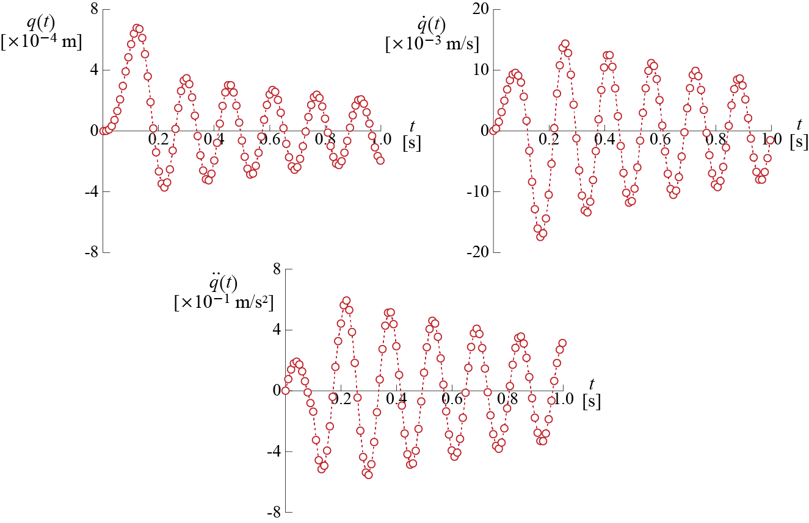
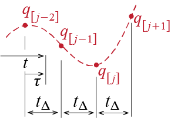

4 Numerical Solutions of the SDOF Equation of Motion
4.1 Preliminary Ideas
The equation of motion for a viscously damped linear SDOF system under the action of an external force was shown in previous sections to be \[ m \ddgct + c \dgct + k \gct = \extforcet \qquad(4.1)\] with the specialized equation for the case of a system excited by a ground motion given by \[ m \ddgct + c \dgct + k \gct = - m \gacct \qquad(4.2)\] Although we have discussed the analytical solutions of these equations for an important subset of excitations, it has to be said that most often analytical solutions are beyond our reach and numerical techniques must be employed to obtain values for the response at various instances. While discussing numerical techniques, we will employ the force excitation form of the equation only to minimize repetitive expositions; clearly the formulations may be specialized for ground motion excitation by substituting \(- m \gacc (t)\) for \(\extforce(t)\).
The need for use of numerical techniques may arise from various reasons: it may be that the form of excitation is so complex that no known analytical solutions exist, it may be that the excitation is known only at discrete instances of time to begin with, or it may be that the nonlinearity of the system is prohibitive for any closed form solutions. In all cases, the method of attack for all numerical techniques is similar: a. time is discretized into a finite number of instances (using, if possible, small intervals in-between them); b. the behavior, in-between the time instances, of the force or the system or both is approximated via straight lines or simple curves; and c. the solution progresses from one step to the next through solution of algebraic equations.
In what follows, we will try to adhere to the following notation so as to provide some common language for all the methods to be discussed. We will assume that continuous time \(t\) is discretized into a total of \(l+1\) instances, each denoted by \(t_j\) for \(j=0,1,2,\ldots,l\). The difference between any two consecutive instances is called a time step, to be denoted by \(\tstep = \dsct{t}{j+1} - \dsct{t}{j}\). The time step does not in general have to be constant, but when working on linear systems with relatively smooth inputs, it often is. To emphasize the discrete nature of the calculations, we’ll use brackets: for some time dependent variable \(\gc(t)\), \(\dsct{\gc}{j}\) will denote the value of that variable at time \(t=\dsct{t}{j}\) where, for constant time step, \(\dsct{t}{j} = j \tstep\). The construction of the numerical solution up to and including the final time, corresponding to step \(l+1\) (counting time \(t=0\) as the first time step) will require knowledge of the input \(\dsct{\extforce}{j}\) for \(j=0,1,2,...,l\) and the initial conditions \(\dsct{\gc}{0}\), \(\dsct{\dgc}{0}\).
4.2 Linear Interpolation of the Excitation
For linear SDOF systems, it is relatively straightforward to develop a numerical progression based on analytical solutions developed for simply varying forces. The fundamental idea is linear interpolation of the excitation in-between two consecutive time steps. Consider the sketch given in Figure 4.1. According to the this approach which we shall refer to as the piecewise linear excitation1 (PLE), the excitation \(\extforce(t)\) is assumed to vary linearly between its values at \(\dsct{t}{j}\) and \(\dsct{t}{j+1}\) so that for \(\dsct{t}{j} \leq t \leq \dsct{t}{j+1}\) the excitation is approximated by \[ \extforce(t) \approx \extforce(\dsct{t}{j}) + \frac{\extforce(\dsct{t}{j+1}) - \extforce(\dsct{t}{j})}{\dsct{t}{j+1}-\dsct{t}{j}} (t - \dsct{t}{j}) = \dsct{\extforce}{j} + \frac{\dsct{\extforce}{j+1} - \dsct{\extforce}{j}}{\tstep} (t - \dsct{t}{j}) \quad \] It is easier to express this equation using a shifted time variable \(\tau=t-\dsct{t}{j}\) such that (replacing the approximation with an equality) \[ \extforce(\tau+\dsct{t}{j})=\dsct{\extforce}{j} + \frac{\dsct{\extforce}{j+1} - \dsct{\extforce}{j}}{\tstep} \tau \quad \text{for} \quad 0 \leq \tau \leq \tstep \] For a linear system, it is possible to employ superposition to develop the ‘exact’ response of the system under such an excitation: The response \(\gc (t)\) for \(\dsct{t}{j} \leq t \leq \dsct{t}{j+1}\) may be considered to be the superposition of the following three responses, all of which were previously developed:
- The response due to nonzero initial conditions \(\dsct{\gc}{j}\) and \(\dsct{\dgc}{j}\) at time \(t=\dsct{t}{j}\). This response is given (see Chapter 2) by \[ \gc (\tau + \dsct{t}{j}) = \expon{- \damp \freq \tau} \left(\dsct{\gc}{j} \cos \dfreq \tau + \frac{\dsct{\dgc}{j} + \damp \freq \dsct{\gc}{j}}{\dfreq} \sin \dfreq \tau \right) \]
- The response due to the constant force \(\dsct{\extforce}{j}\) acting on a system initially at rest. This response is given (see Chapter 3) by \[ \gc (\tau + \dsct{t}{j}) = \frac{\dsct{\extforce}{j}}{k} \left[1-\expon{- \damp \freq \tau} \left(\cos \dfreq \tau + \frac{\damp}{\sqrt{1 - \damp^2}} \sin \dfreq \tau \right) \right] \]
- The response due to the linearly varying (ramp) force \((\dsct{\extforce}{j+1} - \dsct{\extforce}{j}) \tau / \tstep\) acting on a system initially at rest. This response is given (see Chapter 3) by \[ \gc (\tau + \dsct{t}{j}) = \frac{1}{k} \frac{\dsct{\extforce}{j+1} - \dsct{\extforce}{j}}{\tstep} \expon{- \damp \freq \tau} \left(\frac{2 \damp}{\freq} \cos \dfreq \tau + \left[\frac{2 \damp^2}{\dfreq} - \frac{1}{\dfreq}\right] \sin \dfreq \tau \right) + \frac{1}{k}\frac{\dsct{\extforce}{j+1} - \dsct{\extforce}{j}}{\tstep} \left[\tau -\frac{2 \damp}{\freq} \right] \] By taking the derivatives of these expressions we may obtain expressions for velocity, which will also be the superposition of the contributions from the three cases considered above.
The displacement at \(\tau = \tstep\) (corresponding to \(t=\dsct{t}{j+1}\)) is therefore given by \[\begin{align*} \gc(\dsct{t}{j+1}) = \dsct{\gc}{j+1} & = \expon{- \damp \freq \tstep} \left(\dsct{\gc}{j} \cos \dfreq \tstep + \frac{\dsct{\dgc}{j} + \damp \freq \dsct{\gc}{j}}{\dfreq} \sin \dfreq \tstep \right) \\ & \quad + \frac{\dsct{\extforce}{j}}{k} \left[1-\expon{- \damp \freq \tstep} \left(\cos \dfreq \tstep + \frac{\damp}{\sqrt{1 - \damp^2}} \sin \dfreq \tstep \right) \right]\\ & \quad \quad + \frac{\dsct{\extforce}{j+1} - \dsct{\extforce}{j}}{k \tstep} \expon{- \damp \freq \tstep} \left(\frac{2 \damp}{\freq} \cos \dfreq \tstep + \left[\frac{2 \damp^2}{\dfreq} - \frac{1}{ \dfreq}\right] \sin \dfreq \tstep \right) \\ & \quad \quad \quad + \frac{\dsct{\extforce}{j+1} - \dsct{\extforce}{j}}{k \tstep} \left[\tstep -\frac{2 \damp}{\freq} \right] \end{align*}\] Despite the somewhat complicated structure of this result, it is actually composed of a number of coefficients such as \(\cos \dfreq \tstep\), \(\sin \dfreq \tstep\), etc, multiplying the time-varying variables \(\gc\), \(\dgc\) and \(\extforce\). Rearranging the terms, it is possible to express the result above as \[ \dsct{\gc}{j+1} = A_1 \dsct{\gc}{j+1} + A_2 \dsct{\dgc}{j} + A_3 \dsct{\extforce}{j} + A_4 \dsct{\extforce}{j+1} \qquad(4.3)\] where \[ \begin{array}{l} A_1 = \expon{- \damp \freq \tstep} \left(\cos \dfreq \tstep + \frac{\damp}{\sqrt{1 - \damp^2}} \sin \dfreq \tstep \right) \\ A_2 = \expon{- \damp \freq \tstep} \left(\frac{1}{\dfreq} \sin \dfreq \tstep \right) \\ A_3 = \frac{1}{k} \left[\frac{2 \damp}{\freq \tstep} + \expon{- \damp \freq \tstep} \left( - \left[1 + \frac{2 \damp}{\freq \tstep} \right]\cos \dfreq \tstep + \left[\frac{1 - 2 \damp^2}{\dfreq \tstep} - \frac{\damp}{\sqrt{1-\damp^2}} \right] \sin \dfreq \tstep \right) \right] \\ A_4 =\frac{1}{k} \left[1 - \frac{2 \damp}{\freq \tstep} + \expon{- \damp \freq \tstep} \left( \frac{2 \damp}{\freq \tstep} \cos \dfreq \tstep + \frac{2 \damp^2-1}{\dfreq \tstep} \sin \dfreq \tstep \right) \right] \end{array} \qquad(4.4)\] It is noteworthy that these coefficients are time invariant if a constant time step is used, in which case they would have to be calculated only once. Similarly, if we obtain the velocity by differentiating \(\gc (\tau + t_{j})\) and evaluate its value at \(\tau = \tstep\), we find that this value may also be expressed in the form \[ \dsct{\dgc}{j+1} = B_1 \dsct{\gc}{j} + B_2 \dsct{\dgc}{j} + B_3 \dsct{\extforce}{j} + B_4 \dsct{\extforce}{j} \qquad(4.5)\] where \[ \begin{array}{l} B_1 = - \expon{- \damp \freq \tstep} \left(\frac{\freq}{\sqrt{1 - \damp^2}} \sin \dfreq \tstep \right) \\ B_2 = \expon{- \damp \freq \tstep} \left(\cos \dfreq \tstep - \frac{\damp}{\sqrt{1 - \damp^2}} \sin \dfreq \tstep \right) \\ B_3 = \frac{1}{k \tstep} \left[-{1} + \expon{- \damp \freq \tstep} \left( \cos \dfreq \tstep + \frac{\freq \tstep + \damp}{\sqrt{1-\damp^2}} \sin \dfreq \tstep \right) \right] \\ B_4 =\frac{1}{k \tstep} \left[1 - \expon{- \damp \freq \tstep} \left( \cos \dfreq \tstep + \frac{\damp}{\sqrt{1 - \damp^2}} \sin \dfreq \tstep \right) \right] \end{array} \qquad(4.6)\] and once again all coefficients are independent of time if a constant time step is used. Once the displacement and the velocity at an instant are evaluated, the acceleration at that instant may be calculated via the the equation of motion as: \[ \dsct{\ddgc}{j} = \frac{1}{m}(\dsct{\extforce}{j} - c \dsct{\dgc}{j} - k \dsct{\gc}{j}) = \frac{\dsct{\extforce}{j}}{m} - 2 \damp \freq \dsct{\dgc}{j} - \freq^2 \dsct{\gc}{j} \qquad(4.7)\] Having developed the analytical results based on the initial assumptions, the flow of the PLE implemented with a constant time step may be summarized as in Figure 4.2.
EXAMPLE 4 .1
A single story structure, initially at rest, is idealized as an SDOF system for studying its lateral vibrations when subjected to unidirectional, pulse type lateral forces. The mass2 of the structure is assumed to be condensed at a certain level and estimated as \(125 \unit{tons}\), its lateral stiffness is estimated as \(2\times 10^5 \unit{kN/m}\), and it is assumed to be viscously damped with a damping ratio of \(2\%\). The equivalent model of the system and the forces it is subjected to are shown in Figure 4.3. Consider a constant time step of \(\tstep = 0.01 \unit{seconds}\), which corresponds to less than one-tenth of the system’s period, and let us say we want to evaluate the response of the system for a duration of \(1 \unit{second}\), so that a total of \(101\) time instances are to be taken into consideration including the initial time \(t=0\).
Let us start with the analysis of the triangular pulse with an amplitude of \(100 \unit{kN}\) and duration \(t_d = 0.2 \unit{seconds}\). The force increases linearly until it reaches its peak value of \(100 \unit{kN}\) at \(t = t_d / 2 = 0.1 \unit{seconds}\) corresponding to \(j = 10\), after which it declines linearly until it disappears at \(t = t_d / 2 = 0.1 \unit{seconds}\) corresponding to \(j = 20\). The value of the force may therefore be defined at instances \(j\) as \[ \dsct{\extforce}{j} = \begin{cases} 100 \frac{\dsct{t}{j}}{t_d/2} = 10 j \unit{kN} & \text{for } j = 0,1,\ldots,10 \\ 200 - 200 \frac{\dsct{t}{j}}{t_d} = 200 - 10 j \unit{kN} & \text{for } j = 11,12,\ldots,20 \\ 0 & \text{for } j = 21, 22, \ldots, 100 \end{cases} \] The first order of business is to calculate the coefficients \(A\)’s and \(B\)’s that appear in the recursive formulas of Equation 4.3 and Equation 4.5. These coefficients are evaluated using the expressions given in Equation 4.4 and Equation 4.6 to obtain: \[ \begin{array}{rr} A_{1} = 9.2148 \times 10^{-1}, & A_{2} = 9.6580\times 10^{-3} \\ A_{3} = 2.6086\times 10^{-7}, & A_{4} = 1.3174\times 10^{-7} \\ B_1 = -1.5453\times 10^{1}, & B_2 = 9.0603 \times 10^{-1} \\ B_3 = 3.8004\times 10^{-5}, & B_4 = 3.9260\times 10^{-5} \end{array} \] Note that these coefficients are independent of the force insofar as the time step does not change. The next step is to calculate the displacement and the velocity through Equation 4.3 and Equation 4.5, and the acceleration at each time step through Equation 4.7. At the initial instance corresponding to \(j=0\) the system is at rest, and so \(\dsct{\gc}{0} = 0\), \(\dsct{\dgc}{0} = 0\). Since \(\dsct{\extforce}{0} = 0\), we find \(\dsct{\ddgc}{0} = 0\) as well. \(\dsct{\gc}{1}\) and \(\dsct{\dgc}{1}\) are to be evaluated from \[\begin{align*} \dsct{\gc}{1} & = 9.2148 \times 10^{-1} \dsct{\gc}{0} + 9.6580\times 10^{-3} \dsct{\dgc}{0} + 2.6086\times 10^{-7} \dsct{\extforce}{0} \\ & \phantom{9.2148} + 1.3174\times 10^{-7} \dsct{\extforce}{1} = (1.3174\times 10^{-7})(10) = 1.3174\times 10^{-6} \unit{m} \\ \dsct{\dgc}{1} & = -1.5453\times 10^{1} \dsct{\gc}{0} + 9.0603 \times 10^{-1} \dsct{\dgc}{0} + 3.8004\times 10^{-5} \dsct{\extforce}{0} \\ & \phantom{-1.5} + 3.9260\times 10^{-5} \dsct{\extforce}{1} = (3.9260\times 10^{-5} )(10) = 3.9260\times 10^{-4} \unit{m/s} \\ \end{align*}\] and the acceleration at \(j=1\) is consequently given by \[ \dsct{\ddgc}{1} = \frac{1}{m}(\dsct{\extforce}{1} - c \dsct{\dgc}{1} - k \dsct{\gc}{1}) = 7.7264 \times 10^{-2} \unit{m/s} \] The calculations proceed in this manner, and the instances until \(t=0.1 \unit{seconds}\) are obtained as: \[ \small{ \begin{array}{rrr} \dsct{\gc}{0} = 0.0000 \times 10^{-3} \unit{m}, & \dsct{\dgc}{0} = 0.0000 \times 10^{-3} \unit{m/s}, & \dsct{\ddgc}{0} = 0.0000 \unit{m/s^2}\\ \dsct{\gc}{1} = 0.0013\times 10^{-3} \unit{m}, & \dsct{\dgc}{1} = 0.3926\times 10^{-3} \unit{m/s}, & \dsct{\ddgc}{1} = 0.0773 \unit{m/s^2}\\ \dsct{\gc}{2} = 0.0102\times 10^{-3} \unit{m}, & \dsct{\dgc}{2} = 1.5006\times 10^{-3} \unit{m/s}, & \dsct{\ddgc}{2} = 0.1412 \unit{m/s^2}\\ \dsct{\gc}{3} = 0.0331\times 10^{-3} \unit{m}, & \dsct{\dgc}{3} = 3.1391\times 10^{-3} \unit{m/s}, & \dsct{\ddgc}{3} = 0.1820 \unit{m/s^2}\\ \dsct{\gc}{4} = 0.0739\times 10^{-3} \unit{m}, & \dsct{\dgc}{4} = 5.0430\times 10^{-3} \unit{m/s}, & \dsct{\ddgc}{4} = 0.1937 \unit{m/s^2}\\ \dsct{\gc}{5} = 0.1338 \times 10^{-3} \unit{m}, & \dsct{\dgc}{5} = 6.9100 \times 10^{-3} \unit{m/s}, & \dsct{\ddgc}{5} = 0.1748 \unit{m/s^2}\\ \dsct{\gc}{6} = 0.2110\times 10^{-3} \unit{m}, & \dsct{\dgc}{6} = 8.4482\times 10^{-3} \unit{m/s}, & \dsct{\ddgc}{6} = 0.1289 \unit{m/s^2}\\ \dsct{\gc}{7} = 0.3009\times 10^{-3} \unit{m}, & \dsct{\dgc}{7} = 9.4219\times 10^{-3} \unit{m/s}, & \dsct{\ddgc}{7} = 0.0635 \unit{m/s^2}\\ \dsct{\gc}{8} = 0.3971\times 10^{-3} \unit{m}, & \dsct{\dgc}{8} = 9.6876\times 10^{-3} \unit{m/s}, & \dsct{\ddgc}{8} = -0.0108 \unit{m/s^2}\\ \dsct{\gc}{9} = 0.4922\times 10^{-3} \unit{m}, & \dsct{\dgc}{9} = 9.2149\times 10^{-3} \unit{m/s}, & \dsct{\ddgc}{9} = -0.0823 \unit{m/s^2}\\ \dsct{\gc}{10} = 0.5792\times 10^{-3} \unit{m}, & \dsct{\dgc}{10} = 8.0896\times 10^{-3} \unit{m/s}, & \dsct{\ddgc}{10} = -0.1397 \unit{m/s^2} \end{array} } \] These values are provided as reference for readers wishing to check the answers they obtain through their calculations and thereby verify their codes. The response obtained for the whole \(1 \unit{second}\) duration is plotted in Figure 4.4.

Let us repeat the analysis for the case of the half-sine pulse, of amplitude \(100 \unit{kN}\) and duration \(0.4 \unit{seconds}\), shown in Figure 4.3.c. This time the force is defined by \[ \dsct{\extforce}{j} = \begin{cases} 100 \sinp{\frac{\pi}{0.4}\dsct{t}{j}} = 100 \sinp{\frac{\pi}{40}j}; & j = 0,1,\ldots,40 \\ 0; & j = 41, 42, \ldots, 100 \end{cases} \]
Since the coefficients \(A\)’s and \(B\)’s of the PLE do not depend on the input but only on the system parameters and the time step, the values calculated previously for the triangular pulse case are still valid. Proceeding with the recursive calculations, the response quantities until \(t=0.1 \unit{seconds}\) are obtained as follows, presented for reference: \[ \small{ \begin{array}{rrr} \dsct{\gc}{0} = 0.0000\times 10^{-4} \unit{m}, & \dsct{\dgc}{0} = 0.0000 \times 10^{-3} \unit{m/s}, & \dsct{\ddgc}{0}= 0.0000 \unit{m/s^2} \\ \dsct{\gc}{1}= 0.0103\times 10^{-4} \unit{m}, & \dsct{\dgc}{1}= 0.3080\times 10^{-3} \unit{m/s}, & \dsct{\ddgc}{1}= 0.0606 \unit{m/s^2} \\ \dsct{\gc}{2}= 0.0804\times 10^{-4} \unit{m}, & \dsct{\dgc}{2}= 1.1755\times 10^{-3} \unit{m/s}, & \dsct{\ddgc}{2}= 0.1104 \unit{m/s^2} \\ \dsct{\gc}{3}= 0.2591\times 10^{-4} \unit{m}, & \dsct{\dgc}{3}= 2.4518\times 10^{-3} \unit{m/s}, & \dsct{\ddgc}{3}= 0.1414 \unit{m/s^2} \\ \dsct{\gc}{4}= 0.5772\times 10^{-4} \unit{m}, & \dsct{\dgc}{4}= 3.9214\times 10^{-3} \unit{m/s}, & \dsct{\ddgc}{4}= 0.1486 \unit{m/s^2} \\ \dsct{\gc}{5}= 1.0416\times 10^{-4} \unit{m}, & \dsct{\dgc}{5}= 5.3378\times 10^{-3} \unit{m/s}, & \dsct{\ddgc}{5}= 0.1310 \unit{m/s^2} \\ \dsct{\gc}{6}= 1.6350\times 10^{-4} \unit{m}, & \dsct{\dgc}{6}= 6.4633\times 10^{-3} \unit{m/s}, & \dsct{\ddgc}{6}= 0.0913 \unit{m/s^2} \\ \dsct{\gc}{7}= 2.3181\times 10^{-4} \unit{m}, & \dsct{\dgc}{7}= 7.1061\times 10^{-3} \unit{m/s}, & \dsct{\ddgc}{7}= 0.0357 \unit{m/s^2} \\ \dsct{\gc}{8}= 3.0361\times 10^{-4} \unit{m}, & \dsct{\dgc}{8}= 7.1495\times 10^{-3} \unit{m/s}, & \dsct{\ddgc}{8}= -0.0270 \unit{m/s^2} \\ \dsct{\gc}{9}= 3.7271\times 10^{-4} \unit{m}, & \dsct{\dgc}{9}= 6.5696\times 10^{-3} \unit{m/s}, & \dsct{\ddgc}{9}= -0.0873 \unit{m/s^2} \\ \dsct{\gc}{10}= 4.3315\times 10^{-4} \unit{m}, & \dsct{\dgc}{10}= 5.4370\times 10^{-3} \unit{m/s}, & \dsct{\ddgc}{10}= -0.1361 \unit{m/s^2} \end{array} } \] The displacement, velocity and acceleration responses calculated for the first \(1 \unit{second}\) are plotted in Figure 4.5.
This approach is referred in many references as the piecewise exact method which we think is somewhat misleading in that the ‘exactness’ alluded to with this name pertains only the analytical expressions used and not to the accurateness of the method itself.↩︎
Many structures involve relatively large masses such that in practice metric ton (\(\punit{ton}\) or \(\punit{t}\)) is often used, with \(1 \unit{ton} = 1000 \unit{kg}\).↩︎
EXAMPLE 4 .2
To illustrate how the calculations would proceed for an SDOF system subjected to ground motion, let us consider the system of Ex. 4 .1, subjected to a ground motion defined by \[ \gdist = \begin{cases} \ratio{\maxgvel}{2}t - \ratio{\maxgvel t_{d}}{2 \pi} \sinp{\ratio{2\pi}{t_{d}}t}; 0 \leq t \leq t_{d} \\ \ratio{\maxgvel t_{d}}{2}; t > t_{d}\end{cases} \] with \(\maxgvel = 1 \unit{m/s}\) and \(t_{d} = 0.4 \unit{s}\). The ground acceleration is therefore given for \(0 \leq t \leq t_{d}\) by \[ \gacct = \ratio{\pi \maxgvel}{t_{d}} \sinp{\ratio{2\pi}{t_{d}}t} = 2.5 \pi \sinp{{5 \pi}t} \] and it is zero at all other times. Recall that for this system, \(\damp = 2 \%\).
The model and the ground acceleration are shown in Figure 4.6, and the governing equation of motion for \(0 \leq t \leq 0.4 \unit{s}\) is given by \[ m \ddgct + c \dgct + k \gct = - m \gacct \rightarrow 125 \ddgct + c \gct + 2 \times 10^5 \gct = - 312.5 \pi \sinp{5 \pi t} \] subjected to initial conditions \(\gc (0) = 0, \dgc (0) = 0\); or equivalently by \[ \ddgct + 2 \zeta \freq \dgct + \freq^2 \gct = - \gacct \rightarrow \ddgct + 1.6 \gct + 1600 \gct = - 2.5 \pi \sinp{5 \pi t} \] where we have taken into consideration that \(\damp = 0.02\) and \(\freq = \sqrt{k/m} = 40 \unit{rad/s}\) as per the properties stated for the system. Free vibrations ensue after \(t = 0.4 \unit{s}\). Either form of the equation of motion may be used while calculating the response, but note that for the second equation the numerical values for the mass, damping and stiffness coefficients would have to be defined as \(m = 1\), \(c = 1.6\) and \(k = 1600\), respectively. Let us use this second form in our calculations with a constant time step of \(\tstep=0.01 \unit{s}\). The input is defined at each step by \[ \dsct{\extforce}{j} = - m\dsct{\gacc}{j} = \begin{cases} - 7.854 \sinp{0.1571 j} & \text{for } j = 0,1,\ldots,40 \\ 0 & \text{for } j = 41, \ldots, 100 \end{cases} \]
For \(m=1\), \(\damp=0.02\) and \(k=1600\), the coefficients for the PLE are calculated via Equation 4.4 and Equation 4.6 to obtain \[ \begin{array}{rrrr} A_{1} = 9.2148\times 10^{-1}, & A_{2} = 9.6580\times 10^{-3} \\ A_{3} = 3.2607\times 10^{-5}, & A_{4} = 1.6468\times 10^{-5} \\ B_1 = -1.5453\times 10^{1}, & B_2 = 9.0603 \times 10^{-1} \\ B_3 = 4.7504\times 10^{-3}, & B_4 = 4.9076\times 10^{-3} \end{array} \] The recursive calculations via Equation 4.3, Equation 4.5 and Equation 4.7 yield, for the first few steps, the following results:
\[ \small{ \begin{array}{rrr} \dsct{\gc}{ 0 } = 0.0000\times 10^{-3} \unit{m}, & \dsct{\dgc}{ 0 } = 0.0000\times 10^{-1} \unit{m/s}, & \dsct{\ddgc}{ 0 } = -0.0000 \unit{m/s^2} \\ \dsct{\gc}{ 1 } = -0.0202\times 10^{-3} \unit{m}, & \dsct{\dgc}{ 1 } = -0.0603\times 10^{-1} \unit{m/s}, & \dsct{\ddgc}{ 1 } = -1.1866 \unit{m/s^2} \\ \dsct{\gc}{ 2 } = -0.1569\times 10^{-3} \unit{m}, & \dsct{\dgc}{ 2 } = -0.2290\times 10^{-1} \unit{m/s}, & \dsct{\ddgc}{ 2 } = -2.1393 \unit{m/s^2} \\ \dsct{\gc}{ 3 } = -0.5036\times 10^{-3} \unit{m}, & \dsct{\dgc}{ 3 } = -0.4735\times 10^{-1} \unit{m/s}, & \dsct{\ddgc}{ 3 } = -2.6841 \unit{m/s^2} \\ \dsct{\gc}{ 4 } = -1.1136\times 10^{-3} \unit{m}, & \dsct{\dgc}{ 4 } = -0.7471\times 10^{-1} \unit{m/s}, & \dsct{\ddgc}{ 4 } = -2.7151 \unit{m/s^2} \\ \dsct{\gc}{ 5 } = -1.9897\times 10^{-3} \unit{m}, & \dsct{\dgc}{ 5 } = -0.9967\times 10^{-1} \unit{m/s}, & \dsct{\ddgc}{ 5 } = -2.2106 \unit{m/s^2} \\ \dsct{\gc}{ 6 } = -3.0818\times 10^{-3} \unit{m}, & \dsct{\dgc}{ 6 } = -1.1712\times 10^{-1} \unit{m/s}, & \dsct{\ddgc}{ 6 } = -1.2357 \unit{m/s^2} \\ \dsct{\gc}{ 7 } = -4.2934\times 10^{-3} \unit{m}, & \dsct{\dgc}{ 7 } = -1.2302\times 10^{-1} \unit{m/s}, & \dsct{\ddgc}{ 7 } = 0.0683 \unit{m/s^2} \\ \dsct{\gc}{ 8 } = -5.4955\times 10^{-3} \unit{m}, & \dsct{\dgc}{ 8 } = -1.1501\times 10^{-1} \unit{m/s}, & \dsct{\ddgc}{ 8 } = 1.5073 \unit{m/s^2} \\ \dsct{\gc}{ 9 } = -6.5461\times 10^{-3} \unit{m}, & \dsct{\dgc}{ 9 } = -0.9284\times 10^{-1} \unit{m/s}, & \dsct{\ddgc}{ 9 } = 2.8651 \unit{m/s^2} \\ \dsct{\gc}{ 10 } = -7.3110\times 10^{-3} \unit{m}, & \dsct{\dgc}{ 10 } = -0.5835\times 10^{-1} \unit{m/s}, & \dsct{\ddgc}{ 10 } = 3.9370 \unit{m/s^2} \end{array} } \] The relative displacement, relative velocity and relative acceleration responses calculated for the first \(1 \unit{second}\) are plotted in Figure 4.7.
4.3 Central Difference Method
A family of numerical methods commonly referred to as finite difference methods makes use of the Taylor series expansion of response and assumes that the series may be truncated after some terms with negligible error if the time step is relatively small. What is known as the Central Difference Method makes use of a one step forward and a one step backward expansion to reduce the order of error. Recall that for some sufficiently smooth continuous function \(\gc = \gc (t)\), Taylor series expansion expresses the value of the function at \(t=t_2\) as a function of the value of itself and its derivatives at \(t=t_1\) through \[\begin{align*} \gc(t_2) & = \gc(t_1) + (t_2 - t_1) \frac{\diff \gc }{\dt}\biggr|_{t=t_1} \!\!\!\!\! + \frac{(t_2 - t_1)^2}{2}\frac{\diff^2 \gc}{\dt^2}\biggr|_{t=t_1} \!\!\!\!\! + \frac{(t_2 - t_1)^3}{6} \frac{\diff^3 \gc}{\dt^3}\biggr|_{t=t_1} \!\!\!\!\! + \cdots \\ & = \gc(t_1) + \sum_{j=1}^{\infty} \frac{(t_2 - t_1)^j}{j!}\frac{\diff^j \gc}{\dt^j}\biggr|_{t=t_1} \end{align*}\] Consider now the Taylor series expansions for displacement \(\gct\) at \(t+\tstep\) and \(t - \tstep\), given by \[\begin{align*} \gc (t + \tstep) & = \gc (t) + \dgc (t) \tstep + \frac{1}{2}\ddgc (t) \tstep^2 + o(\tstep^3) \\ \gc (t - \tstep) & = \gc (t) - \dgc (t) \tstep + \frac{1}{2}\ddgc (t) \tstep^2 - o(\tstep^3) \end{align*}\] where \(o(\tstep^p)\) is the remainder of the expansion with leading term of order \(\tstep^p\). The sum of the two equations above leads to \[ \gc (t + \tstep) + \gc (t - \tstep) = 2 \gc (t) + \ddgc (t) \tstep^2 + o(\tstep^4) \] and if the fourth-order remainder were to be neglected, the acceleration at time \(t\) could be approximated by \[ \ddgc (t) \approx \frac{\gc (t + \tstep) - 2 \gc (t) + \gc (t - \tstep)}{\tstep^2} \qquad(4.8)\] The error so incurred is expected to decrease in an absolute sense as \(\tstep\) decreases. On the other hand, the difference of the two expansions leads to \[ \gc (t + \tstep) - \gc (t - \tstep) = 2 \dgc (t) \tstep + + o(\tstep^3) \] so that neglecting the third order remainder yields the following approximation for the velocity: \[ \dgc (t) \approx \frac{\gc (t + \tstep) - \gc (t - \tstep)}{2 \tstep} \qquad(4.9)\] Equation 4.8 and Equation 4.9 are called the central difference approximations to the acceleration and the velocity, respectively. These approximations may be used in the equation of motion to express the equation solely in terms of the generalized displacement. Substituting the central difference approximations into the equation of motion and considering that time is discretized with constant time step \(\tstep\) so that \(t = j \tstep\) and \(t \pm \tstep = (j \pm 1) \tstep\), we get \[\begin{align*} m \ddgc (t) + c \dgc (t) + k \gc (t) & = m \dsct{\ddgc}{j} + c \dsct{\dgc}{j} + k \dsct{\gc}{j} \\ & = m \frac{\dsct{\gc}{j+1} - 2 \dsct{\gc}{j} + \dsct{\gc}{j-1}}{\tstep^2} + c \frac{\dsct{\gc}{j+1} - \dsct{\gc}{j-1}}{2 \tstep} + k \dsct{\gc}{j} = \extforce(t)= \dsct{\extforce}{j} \end{align*}\] It is straightforward to recast this expression into a regression type formula so that given the response up to and including time \(t\) (time step \(p\)), the response at \(t+\tstep\) (time step \(p+1\)) may then be estimated using \[ A_1 \dsct{\gc}{j+1} = \left(\dsct{\extforce}{j} - A_2 \dsct{\gc}{j} - A_3 \dsct{\gc}{j-1} \right) \qquad(4.10)\] where \[ \begin{array}{l} A_1 = {\ratio{m}{\tstep^2} + \ratio{c}{2 \tstep}} = m \left[\ratio{1}{\tstep^2} + \ratio{\damp \freq}{\tstep} \right] \\ A_2 = k - \ratio{2m}{\tstep^2} = m \left[\freq^2 - \ratio{2}{\tstep^2} \right] \\ A_3 = \ratio{m}{\tstep^2} - \frac{c}{2 \tstep} = m \left[\ratio{1}{\tstep^2} - \ratio{\damp \freq}{\tstep} \right] \\ A_4 = \ratio{1}{2\tstep}\\ A_5 = \ratio{1}{\tstep^2} \end{array} \qquad(4.11)\] Once again, for a constant time step \(\tstep\), the coefficients \(A_i\) are to be calculated only once. At each time step, the velocity is to be calculated from the central difference approximation in Equation 4.9, which may be written in discrete form as \[ \dsct{\dgc}{j} = \frac{1}{2\tstep}(\dsct{\gc}{j+1} - \dsct{\gc}{j-1}) = A_4 (\dsct{\gc}{j+1} - \dsct{\gc}{j-1}) \qquad(4.12)\] and in the case of SDOF systems the acceleration may be calculated using the equilibrium equation for that time step via the discretized form: \[ m \dsct{\ddgc}{j} = \left(\dsct{\extforce}{j} - c \dsct{\dgc}{j} - k \dsct{\gc}{j} \right) \qquad(4.13)\] In the case of systems with numerous degrees of freedom the matrix computations involved above may be prohibitive and the accelerations may instead be calculated via the central difference approximations: \[ \dsct{\ddgc}{j} = \frac{\dsct{\gc}{j+1}- 2 \dsct{\gc}{j} + \dsct{\gc}{j-1}}{\tstep^2} = A_5 (\dsct{\gc}{j+1}- 2 \dsct{\gc}{j} + \dsct{\gc}{j-1}) \qquad(4.14)\]
For initial conditions \(\dsct{\gc}{0}\) and \(\dsct{\dgc}{0}\), the first iteration would be given by \[ A_1 \dsct{\gc}{1} = \left(\dsct{\extforce}{0} - A_2 \dsct{\gc}{0} - A_3 \dsct{\gc}{-1} \right) \] where \(\dsct{\gc}{-1}\) is needed. One practice for a system at rest may be to assume \(\dsct{\gc}{-1} = 0\). An alternative is to use a value consistent with the central difference approximation which may be derived as follows: The central difference approximations for the acceleration and the velocity at time \(t = 0\) are \[ \dsct{\ddgc}{0} = \frac{\dsct{\gc}{1} - 2 \dsct{\gc}{0} + \dsct{\gc}{-1}}{\tstep^2}, \quad \dsct{\dgc}{0} = \frac{\dsct{\gc}{1} - \dsct{\gc}{-1}}{2 \tstep} \] so that using these two equations to eliminate the \(\dsct{\gc}{1}\) term, \(\dsct{\gc}{-1}\) is given by \[ \dsct{\gc}{-1} = \dsct{\gc}{0} - \tstep \dsct{\dgc}{0} - \frac{\tstep^2}{2} \dsct{\ddgc}{0} \] where the initial acceleration term \(\dsct{\ddgc}{0}\) is to be calculated from the equilibrium equation at time \(t=0\): \[ \dsct{\ddgc}{0} = \frac{1}{m} \left(\dsct{\extforce}{0} - c \dsct{\dgc}{0} - k \dsct{\gc}{0} \right) \] The calculations involved are summarized in Figure 4.8.
It is extremely important to note that for the response to stay stable, meaning not to eventually get excessively and unphysically large so as to render all results useless, the time step used must be such that \[ \tstep \leq \frac{T}{\pi} \] where \(T = 2 \pi \sqrt{m}/\sqrt{k}\) is the natural period of the system. Because of this constraint, the CDM is said to be a conditionally stable method, as opposed to those that are stable for any time step (which are called unconditionally stable). Note that this condition does not necessarily guarantee accuracy, but only stability. In general, the smaller the time step, the more accurate the results would be expected to be; a commonly suggested value is \(\tstep < T/10\).
Geometrically, the central difference method is equivalent to fitting a second order curve passing through three data points \(\dsct{\gc}{j-1}\), \(\dsct{\gc}{j}\) and \(\dsct{\gc}{j+1}\), and evaluating the derivatives (velocity and acceleration in this case) at the midpoint. Assume a discretization with constant time step \(\tstep\) and consider a time variable \(\tau = t - (j-1) \tstep\), such that \[ \dgc (t=\tau + (j-1) \tstep) = \frac{\diff \gc(\tau)}{\diff \tau}, \quad \ddgc (t=\tau + (j-1) \tstep) = \frac{\diff^2 \gc (\tau)}{\diff \tau^2} \] for \(j\tstep \leq t \leq (j+1)\tstep\) and \(0 \leq \tau \leq 2\tstep\). Given three data points \(\dsct{\gc}{j-1}\), \(\dsct{\gc}{j}\) and \(\dsct{\gc}{j+1}\), there is a unique second order curve \(\gc(\tau)\) that passes through all the three points as shown in Figure 4.9. Such a curve is defined by the equation \[ \gc (\tau) = C_1 \tau^2 + C_2 \tau + C_3 \] where \(C_i\) are constants that may be determined through the available information. In fact, we have, \[\begin{align*} q(\tau = 0) & = C_3 = \dsct{\gc}{j-1} \\ q(\tau = \tstep) & = \tstep^2 C_1 + \tstep C_2 + C_3 = \dsct{\gc}{j} \\ q(\tau = 2\tstep) & = 4 \tstep^2 C_1 + 2 \tstep C_2 + C_3 = \dsct{\gc}{j+1} \end{align*}\]
Solving for the coefficients leads to \[ C_1 = \ratio{1}{2 \tstep^2}(\dsct{\gc}{j+1} - 2 \dsct{\gc}{j} + \dsct{\gc}{j-1}), \quad C_2 = \ratio{1}{2 \tstep}(-\dsct{\gc}{j+1} + 4 \dsct{\gc}{j} - 3 \dsct{\gc}{j-1}), \quad C_3 = \dsct{\gc}{j-1} \] so that the velocity and acceleration at the midpoint, i.e. at \(t=i \tstep\) or \(\tau = \tstep\), are given by \[ \dsct{\dgc}{j}=\dgc (t=j \tstep) = \frac{\diff \gc(\tau)}{\diff \tau}\biggr|_{\tau = \tstep} = (2 C_1 \tau + C_2)\bigr|_{\tau=\tstep} = \ratio{\dsct{\gc}{j+1}-\dsct{\gc}{j-1}}{2\tstep} \] \[ \dsct{\ddgc}{j}=\ddgc (t=j \tstep) = \frac{\diff^2 \gc(\tau)}{\diff \tau^2}\biggr|_{\tau = \tstep} = (2 C_1)\bigr|_{\tau=\tstep} = \ratio{\dsct{\gc}{j+1}-2\dsct{\gc}{j}+\dsct{\gc}{j-1}}{\tstep^2} \] which are in fact the finite difference approximations used for these two quantities in the central difference method.
EXAMPLE 4 .3
To illustrate how the central difference calculations proceed, let us consider the system discussed previously in Ex. 4 .1, subjected to the half-sine pulse shown in Figure 4.3.c. The system is defined by parameters \(m=125 \unit{tons}\), \(k=200 \, 000 \unit{kN/m}\) and \(\damp = 0.02\) (or, equivalently, \(c = 2 \damp \freq m = 200 \unit{kN \cdot s / m}\)). With a time step of \(\tstep = 0.01 \unit{seconds} \approx 0.06 \period\), the force is again given by \[ \dsct{\extforce}{j} = \begin{cases} 100 \sinp{\frac{\pi}{40}j} & \text{for } j = 0,1,\ldots,40 \\ 0 & \text{for } j = 41, 42, \ldots, 100 \end{cases} \] and the coefficients to be used in the central difference method are calculated via Equation 4.11 as: \[ A_{1} ^{-1}= 7.9365\times 10^{-7}, \; A_{2} = -2300 \times 10^{3}, \; A_{3} = 1240 \times 10^{3}, \; A_{4} = 50, \; A_{5} = 10^{4} \] With zero initial conditions so that \(\dsct{\gc}{0} = 0\) and \(\dsct{\dgc}{0} = 0\), \(\dsct{\ddgc}{0}\) and \(\dsct{\gc}{-1}\) are calculated to obtain \[ \dsct{\ddgc}{0} = \frac{1}{m} (\dsct{\extforce}{0} - c \dsct{\dgc}{0} - k \dsct{\gc}{0}) = 0, \quad \dsct{\gc}{-1} = \dsct{\gc}{0} - \tstep \dsct{\dgc}{0} - \frac{\tstep^2}{2} \dsct{\ddgc}{0} = 0 \] after which, through the recursive formulas given by Equation 4.29, Equation 4.12 and Equation 4.14, the following values are calculated for the first few time steps: \[ \small{ \begin{array}{rrr} \dsct{\gc}{ 0 } = 0.0000\times 10^{-4} \unit{m}, & \dsct{\dgc}{ 0 } = 0.0000\times 10^{-3} \unit{m/s}, & \dsct{\ddgc}{ 0 } = 0.0000 \unit{m/s^2} \\ \dsct{\gc}{ 1 } = 0.0000\times 10^{-4} \unit{m}, & \dsct{\dgc}{ 1 } = 0.3114\times 10^{-3} \unit{m/s}, & \dsct{\ddgc}{ 1 } = 0.0623 \unit{m/s^2} \\ \dsct{\gc}{ 2 } = 0.0623\times 10^{-4} \unit{m}, & \dsct{\dgc}{ 2 } = 1.1891\times 10^{-3} \unit{m/s}, & \dsct{\ddgc}{ 2 } = 0.1133 \unit{m/s^2} \\ \dsct{\gc}{ 3 } = 0.2378\times 10^{-4} \unit{m}, & \dsct{\dgc}{ 3 } = 2.4792\times 10^{-3} \unit{m/s}, & \dsct{\ddgc}{ 3 } = 0.1447 \unit{m/s^2} \\ \dsct{\gc}{ 4 } = 0.5581\times 10^{-4} \unit{m}, & \dsct{\dgc}{ 4 } = 3.9608\times 10^{-3} \unit{m/s}, & \dsct{\ddgc}{ 4 } = 0.1516 \unit{m/s^2} \\ \dsct{\gc}{ 5 } = 1.0300\times 10^{-4} \unit{m}, & \dsct{\dgc}{ 5 } = 5.3824\times 10^{-3} \unit{m/s}, & \dsct{\ddgc}{ 5 } = 0.1327 \unit{m/s^2} \\ \dsct{\gc}{ 6 } = 1.6346\times 10^{-4} \unit{m}, & \dsct{\dgc}{ 6 } = 6.5023\times 10^{-3} \unit{m/s}, & \dsct{\ddgc}{ 6 } = 0.0913 \unit{m/s^2} \\ \dsct{\gc}{ 7 } = 2.3304\times 10^{-4} \unit{m}, & \dsct{\dgc}{ 7 } = 7.1272\times 10^{-3} \unit{m/s}, & \dsct{\ddgc}{ 7 } = 0.0337 \unit{m/s^2} \\ \dsct{\gc}{ 8 } = 3.0600\times 10^{-4} \unit{m}, & \dsct{\dgc}{ 8 } = 7.1418\times 10^{-3} \unit{m/s}, & \dsct{\ddgc}{ 8 } = -0.0308 \unit{m/s^2} \\ \dsct{\gc}{ 9 } = 3.7588\times 10^{-4} \unit{m}, & \dsct{\dgc}{ 9 } = 6.5263\times 10^{-3} \unit{m/s}, & \dsct{\ddgc}{ 9 } = -0.0923 \unit{m/s^2} \\ \dsct{\gc}{ 10 } = 4.3653\times 10^{-4} \unit{m}, & \dsct{\dgc}{ 10 } = 5.3582\times 10^{-3} \unit{m/s}, & \dsct{\ddgc}{ 10 } = -0.1413 \unit{m/s^2} \end{array} } \]
The displacement, velocity and acceleration response calculated for the first \(1 \unit{second}\) are plotted in Figure 4.10.
EXAMPLE 4 .4
For a second application of the central difference method, let us consider the system and base motion of Figure 4.6. The equation of motion for \(0 \leq t \leq 0.4 \unit{seconds}\) was shown (see Ex. 4 .2) to be given by \[ \ddgct + 1.6 \gct + 1600 \gct = - 2.5 \pi \sinp{5 \pi t}, \quad \{\gc (0) = 0, \dgc (0) = 0\} \] while for \(t > 0.4 \unit{s}\), free vibrations ensue. With a time step of \(\tstep=0.01 \unit{s}\), the input is defined by \[ \dsct{\extforce}{j} = \begin{cases}- 7.854 \sinp{0.1571 j} & \text{for } j = 0,1,\ldots,40 \\ 0 & \text{for } j = 41, 42, \ldots, 100 \end{cases} \]
For \(m=1\), \(\damp=0.02\) and \(k=1600\), the coefficients for the central difference method are calculated via Equation 4.11 to obtain \[ A_{1}^{-1} = 9.9206\times 10^{-5}, \; A_{2} = 18 \; 400, \; A_{3} = 9920, \; A_{4} = 50, \; A_{5} = 10^{4} \] With zero initial conditions so that \(\dsct{\gc}{0} = 0\) and \(\dsct{\dgc}{0} = 0\), \(\dsct{\ddgc}{0}\) and \(\dsct{\gc}{-1}\) are calculated to obtain \[ \dsct{\ddgc}{0} = \frac{1}{m} (\dsct{\extforce}{0} - c \dsct{\dgc}{0} - k \dsct{\gc}{0}) = 0, \quad \dsct{\gc}{-1} = \dsct{\gc}{0} - \tstep \dsct{\dgc}{0} - \frac{\tstep^2}{2} \dsct{\ddgc}{0} = 0 \] after which, the recursive calculations via Equation 4.29, Equation 4.12 and Equation 4.14 yield, for the first few steps, the following results:
\[ \small{ \begin{array}{rrr} \dsct{\gc}{ 0 } = 0.0000\times 10^{-3} \unit{m}, & \dsct{\dgc}{ 0 } = 0.0000\times 10^{-1} \unit{m/s}, & \dsct{\ddgc}{ 0 } = 0.0000 \unit{m/s^2} \\ \dsct{\gc}{ 1 } = 0.0000\times 10^{-3} \unit{m}, & \dsct{\dgc}{ 1 } = -0.0609\times 10^{-1} \unit{m/s}, & \dsct{\ddgc}{ 1 } = -1.2189 \unit{m/s^2} \\ \dsct{\gc}{ 2 } = -0.1219\times 10^{-3} \unit{m}, & \dsct{\dgc}{ 2 } = -0.2316\times 10^{-1} \unit{m/s}, & \dsct{\ddgc}{ 2 } = -2.1949 \unit{m/s^2} \\ \dsct{\gc}{ 3 } = -0.4633\times 10^{-3} \unit{m}, & \dsct{\dgc}{ 3 } = -0.4788\times 10^{-1} \unit{m/s}, & \dsct{\ddgc}{ 3 } = -2.7478 \unit{m/s^2} \\ \dsct{\gc}{ 4 } = -1.0794\times 10^{-3} \unit{m}, & \dsct{\dgc}{ 4 } = -0.7546\times 10^{-1} \unit{m/s}, & \dsct{\ddgc}{ 4 } = -2.7686 \unit{m/s^2} \\ \dsct{\gc}{ 5 } = -1.9725\times 10^{-3} \unit{m}, & \dsct{\dgc}{ 5 } = -1.0049\times 10^{-1} \unit{m/s}, & \dsct{\ddgc}{ 5 } = -2.2369 \unit{m/s^2} \\ \dsct{\gc}{ 6 } = -3.0892\times 10^{-3} \unit{m}, & \dsct{\dgc}{ 6 } = -1.1779\times 10^{-1} \unit{m/s}, & \dsct{\ddgc}{ 6 } = -1.2229 \unit{m/s^2} \\ \dsct{\gc}{ 7 } = -4.3282\times 10^{-3} \unit{m}, & \dsct{\dgc}{ 7 } = -1.2328\times 10^{-1} \unit{m/s}, & \dsct{\ddgc}{ 7 } = 0.1244 \unit{m/s^2} \\ \dsct{\gc}{ 8 } = -5.5547\times 10^{-3} \unit{m}, & \dsct{\dgc}{ 8 } = -1.1465\times 10^{-1} \unit{m/s}, & \dsct{\ddgc}{ 8 } = 1.6014 \unit{m/s^2} \\ \dsct{\gc}{ 9 } = -6.6212\times 10^{-3} \unit{m}, & \dsct{\dgc}{ 9 } = -0.9173\times 10^{-1} \unit{m/s}, & \dsct{\ddgc}{ 9 } = 2.9833 \unit{m/s^2} \\ \dsct{\gc}{ 10 } = -7.3892\times 10^{-3} \unit{m}, & \dsct{\dgc}{ 10 } = -0.5651\times 10^{-1} \unit{m/s}, & \dsct{\ddgc}{ 10 } = 4.0592 \unit{m/s^2} \\ \end{array} } \] The relative displacement, relative velocity and relative acceleration responses calculated for the first \(1 \unit{second}\) are plotted in Figure 4.11.
4.4 Interlude
Having discussed two numerical integration methods and gained a sense of how numerical integration schemes operate, it may be worthwhile to look into how the “success” of a numerical method should be judged. It is not our intention to provide a complete coverage of the analysis of numerical integration schemes. For interested readers, there are various studies and books in which thorough investigations may be found.3 Rather we aim to simply introduce some of the concepts and keywords that are encountered in such analyses so as to allude to certain pros and cons of the numerical methods that have been and will be introduced in this chapter.
To begin with, we may try to get a sense of how well a particular approach does by comparing its predictions in those problems for which analytical solutions are available. This is obviously not the best approach since there is no guarantee that if a method works well in a particular problem it should also work well in some other: certain qualities of the system and/or the excitation may lead to variations in how well a numerical integration scheme works for that particular problem. Having expressed this disclaimer, it is still worthwhile to get a sense of what happens through visuals. Let us consider the sinusoidal pulse type ground motion that was investigated in Ex. 4 .2 and Ex. 4 .4. The analytical solution to such an input was developed as given in Equation 3.88 and Equation 3.90, and so the true value of the response may be calculated at all times provided the following values are used in the analytical solution: \[ \maxgvel = 1 \unit{m/s}, t_{d} = 0.4 \unit{s}, \extfreq' = \ratio{2 \pi}{t_{d}} = 5 \pi, \freq = 40 \unit{rad/s}, \damp = 0.02, \ratfreq = \ratio{\extfreq'}{\freq}=\ratio{\pi}{8} \] Consider, for example, the estimates that would be obtained by the central difference method for this problem. Figure 4.12 shows the estimates obtained with the central difference method employed with three different step sizes, i.e. \(0.002\), \(0.01\) and \(0.02 \unit{seconds}\), along with the true values that are given by the analytical solution. Note that all the solutions are stable since they all remain bounded: this is to be expected since all time steps are smaller than the critical time step given by \(\period/\pi = 0.05 \unit{seconds}\). That a solution is stable does not mean it is necessarily sufficiently accurate. The good news seems to be that as the time step gets smaller, the central difference estimates tend to match very well with the true values and in fact it is visually very difficult to distinguish in Figure 4.12 between the true values and the estimates obtained with \(\tstep = 0.002 \unit{seconds}\).
As the time step gets larger, some systematic issues begin to appear. One obvious concern is whether or not the response amplitude at a given instance is estimated well. Some part of the response relates to the input: whether or not the time step used is small enough to capture the variations in the excitation will naturally directly affect the results. Assuming that the excitation is captured appropriately, there could still be an issue with what is generally called artificial damping or numerical damping. Some numerical techniques introduce, by virtue of their approximations, an artificial dissipation which causes errors in amplitude estimates. The central difference method is not known to suffer from this error. The second and perhaps more surprising problem is that some numerical methods introduce a change in the period of the system (sometimes referred to as period elongation) , and this seems to be a particular issue with the central difference method, as may be observed from the response curves. As the time step increases, the central difference method seems to lead to a decrease in the period, very evident especially in the free vibration phase. That this effect is inherent to the method and not specific to a particular example may be shown by direct analysis of the finite difference equations.
Whether or not a numerical integration scheme is conditionally or unconditionally stable is a fundamental question that in most cases precede accuracy. The analysis of stability generally proceeds with either the analytical solution of the finite difference equations or a state space analysis. For illustration purposes let us focus on the state space analysis by again taking the central difference method as a case study, and further simplify the problem by assuming that the system is undamped. The central difference estimate of the response for such a system is given (Equation 4.29 and Equation 4.11 with \(c = 0\)) by \[ \dsct{\gc}{j+1} = (2-\tstep^2 \freq^2) \dsct{\gc}{j} - \dsct{\gc}{j-1} + \ratio{\tstep^2}{m} \dsct{\extforce}{j} \] This equation may be complemented by the identity \(\dsct{\gc}{j}=\dsct{\gc}{j}\) so that, by defining a state vector \[ \dscs{j} = \colmat{\dsct{\gc}{j} \\ \dsct{\gc}{j-1}} \] the central difference estimation may be cast into state space format as \[ \dscs{j+1} = \dscA \dscs{j} + \dscB \dscf{j} \] where the state transition matrix is given by \[ \dscA = \begin{bmatrix} (2-\tstep^2 \freq^2) & -1 \\ 1 & 0 \end{bmatrix} \] Through repeated substitutions, the state after \(p\) time steps may be shown to be given by \[ \dscs{i+p} = \dscA^p \dscs{j} + \sum_{j=0}^{p-1} \dscA^{p-1-j}\dscB \dscf{i+j} \] whence it should be apparent that whether or not the response estimates indefinitely grow with increasing \(p\) depends on how \(\dscA^{p}\) behaves. From linear algebra we know that a real valued matrix \(\dscA\) may be expressed using its eigenvalue matrix4 \(\eigvalmat\) and eigenvector matrix \(\eigvecmat\) as \[ \dscA = \eigvecmat^{-1} \eigvalmat \eigvecmat \] where, for our \(2 \times 2\) state transition matrix \(\dscA\), the eigenvalues are the roots of the characteristic equation given by: \[ \det\left(\begin{bmatrix} (2-\tstep^2 \freq^2) - \eigval & -1 \\ 1 & 0-\eigval\end{bmatrix}\right) = \eigval^2 + (\tstep^2 \freq^2 - 2) \eigval + 1 = 0 \] Solving this quadratic equation and using the relationship \(\freq = 2 \pi / \period\) yields \[ \eigval_{1,2} = 1 - {2}\left(\ratio{\tstep \pi}{\period} \right)^2 \mp 2 \left(\ratio{\tstep \pi}{\period} \right)\sqrt{\left(\ratio{\tstep \pi}{\period} \right)^2-1} \] Using the eigendecomposition, the \(p\)th power of \(\dscA\) may be expressed as \[ \dscA^p = \underbrace{\eigvecmat^{-1} \eigvalmat \eigvecmat\eigvecmat^{-1} \eigvalmat \eigvecmat\cdots\eigvecmat^{-1} \eigvalmat \eigvecmat}_{p \text{ times}} = \eigvecmat^{-1} \eigvalmat^{p} \eigvecmat \] so that the stability (or boundedness) depends directly on whether or not any of the eigenvalues have a magnitude bigger than unity, inwhich case \(\eigval^p\) would increase without bound as \(p\) continues to increase. For our state space model of the central difference method, it is straightforward to see that when \(\tstep \pi / T > 1\), the magnitude of at least one of the roots exceeds 1 and so the system becomes unstable. When \(\tstep \pi / T < 1\), we have complex valued roots given by \[ \eigval_{1,2} = 1 - {2}\left(\ratio{\tstep \pi}{\period} \right)^2 \mp \imag 2 \left(\ratio{\tstep \pi}{\period} \right)\sqrt{1-\left(\ratio{\tstep \pi}{\period} \right)^2} \] so that the magnitude of the eigenvalues, which are a pair of complex conjugate numbers in this case, is given by \[ \vmag{\eigval_1} = \vmag{\eigval_2} = \left[1 - {2}\left(\ratio{\tstep \pi}{\period} \right)^2\right]^2 + \left[2\left(\ratio{\tstep \pi}{\period} \right)\sqrt{1-\left(\ratio{\tstep \pi}{\period} \right)^2} \right]^2 = 1 \] and therefore the \(n\)th power of the eigenvalues remain bounded, making the system stable. The magnitude of the maximum eigenvalue of a matrix is called the spectral radius of that matrix, and the stability criterion is sometimes expressed as the spectral radius being less than or equal to 1.5
The foregoing analysis is presented to introduce some key concepts in the evaluation of numerical techniques for solving the equation of motion. By now it should be obvious why the step size \[ \tstep^{cr} = \ratio{T}{\pi} \] is critical, and that the algorithm should be run with a time step less than this value. While discussing other numerical methods we will not dwell on detailed analyses, but we will use some terminology like artificial (or numerical) damping, period elongation and conditionally stable, all of which have been discussed or illustrated in the context of the central difference method.
Since most of the problems go away if one were to choose a small enough time-step, why do we care, why not choose a very very small time step and be done with it? The computational cost for single degree of freedom systems is negligible and by all means the problems may be alleviated by using as small a time step as desired. The significant problem lies with systems having multiple degrees of freedom. We will eventually see that the response of such systems may be thought of as some linear combination of the responses of many contributing single degree of freedom systems with varying frequencies. Consider a system with thousands of degrees of freedom: the choice of a very small time step may drastically increase computational burden while using a larger time step may lead to stability problems in some of those contributing single degree of freedom systems. It is therefore crucial to understand possible problems that may be encountered while employing numerical integration schemes so that the analyst may correctly interpret the results obtained and perhaps optimize the choice of time step.
Another consideration that factors in predominantly when working on multi degree of freedom nonlinear systems is whether or not an integration scheme is explicit or implicit. If an integration scheme is such that all the information necessary to calculate the displacement response at time step \(j+1\) is limited to those already known at the end of time step \(j\), the method is said to be explicit. Mathematically this is analogous to a relationship of the sort \(\dsct{\gc}{j+1} =\mathfrak{F}(\dsct{\gc}{j} ,\dsct{\dgc}{j} ,\dsct{\ddgc}{j} )\) where \(\mathfrak{F}(\cdot)\) is some function, and it stems from the practice of evaluating the equilibrium equation at time step \(j\) into which the response at step \(j+1\) enters as some component. The central difference method is an explicit method because to calculate \(\dsct{\gc}{j+1}\), we just need to know \(\dsct{\gc}{j}\) and \(\dsct{\gc}{j-1}\), both of which are known at the end of the \(j\)-th step.6 Explicit methods may be more cost effective, especially in the analysis of multi degree of freedom systems, but generally suffer from a need to work with relatively small time steps to minimize errors. Implicit methods, on the other hand, make use of some information pertaining to time step \((j+1)\) while solving for the response at that time step, and thereby may require iterative techniques. The equilibrium equation considered is that at time step \(j+1\). Mathematical expressions of implicit methods are analogous to the form \(\mathfrak{F'}(\dsct{\gc}{j},\dsct{\dgc}{j},\dsct{\dgc}{j}, \dsct{\gc}{j+1}, \dsct{\dgc}{j+1} ,\dsct{\ddgc}{j+1})=0\) where \(\mathfrak{F'}(\cdot)\) is some function such that a simple forward time marching is not possible. Their solution is generally more costly due to the need to iterate in between and may also involve costly matrix factorizations.
see, e.g.:
N. M. Newmark and S.P. Chan, A Comparison of Numerical Methods for Analyzing the Dynamic Response of Structures, Civil Engineering Studies SRS-036, University of Illinois at Urbana-Champaign, 1952.
S. Levy and W.D. Kroll, Errors Introduced by Finite Space and Time Increments in Dynamic Response Computation, J. of Research of the National Bureau of Standarts, Vol. 51, No. 1, pp. 57-68, 1953.
R. E. Nickell, On the Stability of Approximation Operators in Problems of Structural Dynamics, Int. J. Solids Structures, Vol. 7, pp. 301-319, 1971.
K.-J. Bathe, Finite Element Procedures, Prentice Hall, 1996.↩︎Jordan canonical form, which is not necessarily diagonal in the presence of repeated eigenvalues.↩︎
When \(\tstep \pi / T = 1\), two roots are identical as \(\eigval_1 = \eigval_2 = \eigval\) but their magnitude remains \(\vmag{\eigval}=1\) and stability is maintained.↩︎
There is also information coming from the excitation but the excitation is assumed to be known and hence does not affect the discussion.↩︎
4.5 Houbolt’s Method
There are many variations to the theme of finite differences, and the one that we will now discuss as an alternative is generally referred to as Houbolt’s method. Originally in an effort to improve dynamic analyses of aircraft subjected to gusts,7 Houbolt’s method employs a four-point expansion whereby in the more commonly employed variation the response at steps \(j\), \(j-1\) and \(j-2\) are expressed in terms of the response quantities at time step \(j+1\): \[\begin{align*} \dsct{\gc}{j} & = \dsct{\gc}{j+1} - \tstep \dsct{\dgc}{j+1} + \ratio{\tstep^2}{2} \dsct{\ddgc}{j+1} - \ratio{\tstep^3}{6} \dsct{\dddot{\gc}}{j+1} + o(\tstep^4) \\ \dsct{\gc}{j-1} & = \dsct{\gc}{j+1} - (2\tstep) \dsct{\dgc}{j+1} + \ratio{(2\tstep)^2}{2} \dsct{\ddgc}{j+1} - \ratio{(2\tstep)^3}{6} \dsct{\dddot{\gc}}{j+1} + o(\tstep^4) \\ \dsct{\gc}{j-2} & = \dsct{\gc}{j+1} - (3\tstep) \dsct{\dgc}{j+1} + \ratio{(3\tstep)^2}{2} \dsct{\ddgc}{j+1} - \ratio{(3\tstep)^3}{6} \dsct{\dddot{\gc}}{j+1} + o(\tstep^4) \end{align*}\]
Taking into account the third order derivatives makes this a higher order approach than the central difference method and the error introduced by truncating the Taylor series in this case is \(o(\tstep^4)\). Solving for \(\dsct{\dgc}{j+1}\), \(\dsct{\ddgc}{j+1}\), \(\dsct{\dddot{\gc}}{j+1}\) in terms of \(\dsct{\gc}{j+1}\), \(\dsct{\gc}{j}\), \(\dsct{\gc}{j-1}\) and \(\dsct{\gc}{j-1}\) while ignoring higher order terms leads to \[\begin{align*} \dsct{\dgc}{j+1} & = \ratio{1}{6\tstep} (11 \dsct{\gc}{j+1} - 18 \dsct{\gc}{j} + 9 \dsct{\gc}{j-1} - 2 \dsct{\gc}{j-2} )\\ \dsct{\ddgc}{j+1} & = \ratio{1}{\tstep^2} (2 \dsct{\gc}{j+1} - 5 \dsct{\gc}{j} + 4 \dsct{\gc}{j-1} - \dsct{\gc}{j-2} ) \end{align*}\] Substituting these approximations into the equation of motion at time \(t=(j+1)\tstep\), given by \[ m\dsct{\ddgc}{j+1} + c \dsct{\dgc}{j+1} + k \dsct{\gc}{j+1} = \dsct{\extforce}{j+1} \] and after rearranging the terms, we get \[ A_1 \dsct{\gc}{j+1} = \dsct{\extforce}{j+1} + A_2 \dsct{\gc}{j} + A_3 \dsct{\gc}{j-1} + A_4 \dsct{\gc}{j-2} \qquad(4.15)\] where \[ \begin{array}{l} A_1 = k + \ratio{2}{\tstep^2}m + \ratio{11}{6 \tstep} c = k \left[1 + \ratio{2}{(\freq \tstep)^2} + \ratio{11 \damp }{3 (\freq \tstep)}\right] \\ A_2 = \ratio{5}{\tstep^2} m + \ratio{3}{ \tstep} c = k \left[\ratio{5}{(\freq \tstep)^2} + \ratio{6 \damp}{ (\freq \tstep)} \right] \\ A_3 = - \ratio{4}{\tstep^2} m - \ratio{3}{2 \tstep} c = -k \left[\ratio{4}{(\freq \tstep)^2} + \ratio{3\damp}{(\freq \tstep)} \right] \\ A_4 = \ratio{1}{\tstep^2} m + \ratio{1}{3 \tstep} c = k \left[\ratio{1}{(\freq \tstep)^2} + \ratio{2 \damp}{3 (\freq \tstep)} \right] \\ A_5 = \ratio{1}{6\tstep}\\ A_6 = \ratio{1}{\tstep^2} \end{array} \qquad(4.16)\]
Houbolt’s method is unconditionally stable so that relatively larger time steps may be used without stability concerns compared to the central difference method. On the other hand, it introduces artificial damping and period elongation which become pronounced with increasing step size. It is an implicit method since the equilibrium equation is evaluated at time step \(p+1\), and consequently the stiffness term that appears in coefficient \(A_1\) has to be inverted to obtain a solution. Although this is a trivial matter in the case of SDOF models, in the context of MDOF models it may mean the inversion (usually by some type of matrix factorization) of a large dimensional non-diagonal matrix, possibly at each time step if considering nonlinear systems with varying stiffness, which may be computationally very costly. Another issue is the initiation, in that to calculate \(\dsct{\gc}{1}\) and \(\dsct{\gc}{2}\) one needs to know \(\dsct{\gc}{-1}\) and \(\dsct{\gc}{-2}\) which, unfortunately, are not directly available. It turns out that the method may be quite sensitive to these initial conditions and that, for example, prescribing zero values for \(\dsct{\gc}{-1}\) and \(\dsct{\gc}{-2}\) may lead to unacceptable results. The common procedure is to estimate \(\dsct{\gc}{1}\) and \(\dsct{\gc}{2}\) via some other method and start the Houbolt progression with the third step.
Geometrically, Houbolt’s method amounts to fitting a cubic curve to four data points and evaluating the derivatives at the end point. Consider the data points shown in Figure 4.14. A cubic curve may be fit to these four points, to be defined by the equation \[ \gc (\tau) = C_1 \tau^3 + C_2 \tau^2 + C_3 \tau + C_4 \] where \(C_i\) are constants that may be determined through the available information. In fact, we have, \[\begin{align*} q(\tau = 0) & = C_4 = \dsct{\gc}{j-2} \\ q(\tau = \tstep) & = \tstep^3 C_1 + \tstep^2 C_2 + \tstep C_3 + C_4= \dsct{\gc}{j-1} \\ q(\tau = 2\tstep) & = 8 \tstep^3 C_1 + 4 \tstep^2 C_2 + 2 \tstep C_3 + C_4 = \dsct{\gc}{j}\\ q(\tau = 2\tstep) & = 27 \tstep^3 C_1 + 9 \tstep^2 C_2 + 3 \tstep C_3 + C_4 = \dsct{\gc}{j+1} \end{align*}\]

Solving for the coefficients one gets \[ \begin{array}{c} C_1 = \ratio{1}{6 \tstep^3}(\dsct{\gc}{j+1} - 3 \dsct{\gc}{j} + 3 \dsct{\gc}{j-1}-\dsct{\gc}{j-2}) \\ C_2 = \ratio{1}{2 \tstep^2}(-\dsct{\gc}{j+1} + 4 \dsct{\gc}{j} - 5 \dsct{\gc}{j-1}+2\dsct{\gc}{j-2})\\ C_3 = \ratio{1}{6 \tstep}(2\dsct{\gc}{j+1} -9 \dsct{\gc}{j} +18 \dsct{\gc}{j-1}-11\dsct{\gc}{j-2}), \qquad C_4 = \dsct{\gc}{j-2} \end{array} \] so that the velocity and acceleration at the end point, i.e. at \(t=(j+1) \tstep\) or equivalently at \(\tau = 3\tstep\), are given by \[\begin{align*} \dsct{\dgc}{j+1} & =\dgc (t=(j+1) \tstep) = \frac{\diff \gc(\tau)}{\diff \tau}\biggr|_{\tau = 3\tstep} = (3 \tau^2 C_1 + 2 \tau C_2 + C_3)\bigr|_{\tau=3\tstep} \\ & = \ratio{11 \dsct{\gc}{j+1}-18 \dsct{\gc}{j}+9\dsct{\gc}{j-1}-2\dsct{\gc}{j-2}}{6\tstep} \end{align*}\] \[\begin{align*} \dsct{\ddgc}{j+1} & =\ddgc (t=(j+1) \tstep) = \frac{\diff^2 \gc(\tau)}{\diff \tau^2}\biggr|_{\tau = 3\tstep} = (18 \tau C_1 + 2 C_2)\bigr|_{\tau=3\tstep} \\ & = \ratio{2 \dsct{\gc}{j+1}-5 \dsct{\gc}{j}+4\dsct{\gc}{j-1}-\dsct{\gc}{j-2}}{\tstep^2} \end{align*}\] which are in fact the finite difference approximations used for these two quantities in Houbolt’s method.
EXAMPLE 4 .5
To illustrate how Houbolt’s method proceeds and to provide some comparison with the central difference method, let us consider the relatively simple problem of free vibrations.
Consider an undamped system with frequency \(\freq\), subjected to initial conditions \(\gc (0) = \gc_o\) and \(\dgc (0) = 0\), so that it is governed by \[ \ddgct + \freq^2 \gct = 0, \quad \left\{\gc (0) = \gc_o, \dgc (0) = 0\right\} \] and its response is given by \[ \gct = \gc_o \cos \freq t \] This response with a single known period and amplitude will allow a direct observation of any period elongation or artificial damping introduced by a numerical method. Since the right hand side of the equation is zero, the problem represents all undamped and unforced linear SDOF systems, and the results may be discussed in terms of the ratio of the time step to the period of the system. Here we will discuss the estimates for three different time steps. To provide a numerical check for the reader for Houbolt’s method, for a time step of \(\tstep = 0.1 \unit{seconds}\) and \(\tstep / \period = 0.01\), the system’s frequency is calculated as \(\freq = 2 \pi / 10\), and the coefficients in Houbolt’s method for this undamped system are given by: \[ \ratio{A_1}{m} = 200.394784, \quad \ratio{A_2}{m} = 500, \quad \ratio{A_3}{m} = -400, \quad \ratio{A_4}{m} = 100 \] Given the initial condition \(\dsct{\gc}{0}=\gc_o\), the estimates for \(\dsct{\gc}{-1}\) and \(\dsct{\gc}{1}\) are calculated using the central difference approximations to obtain \[ \ratio{\dsct{\gc}{-1}}{\gc_o} = 1.001974, \quad \ratio{\dsct{\gc}{1}}{\gc_o} = 0.994078 \] Once these two values are calculated, the recursive equation of Houbolt’s method may be employed to obtain estimates for \(\dsct{\gc}{2}, \dsct{\gc}{3}, \ldots\). Displacement estimates for the first few time steps are calculated as \[\begin{align*} \ratio{\dsct{\gc}{2}}{\gc_o} & = 0.984240, \quad \ratio{\dsct{\gc}{3}}{\gc_o} = 0.970527 \\ \ratio{\dsct{\gc}{4}}{\gc_o} & = 0.952996, \quad \ratio{\dsct{\gc}{5}}{\gc_o} = 0.931717 \\ \ratio{\dsct{\gc}{6}}{\gc_o} & = 0.906774, \quad \ratio{\dsct{\gc}{7}}{\gc_o} = 0.878266 \\ \ratio{\dsct{\gc}{8}}{\gc_o} & = 0.846304, \quad \ratio{\dsct{\gc}{9}}{\gc_o} = 0.811014 \end{align*}\]
How the two phenomena previously discussed become more or less pronounced with increasing time step size is quite easily observed in the plots of Figure 4.15. These three plots show the variation of the displacement response, normalized by the maximum displacement (which is equal to the initial displacement), for the first four cycles of oscillation. The solid line in these plots show the response calculated via the analytical solution. The hollow circles are the response values calculated with the central difference method, and the plus signs mark those calculated with Houbolt’s method.
For a relatively small time step such as \(\tstep / \period = 0.01\), both methods provide good estimates for the analytical solution, although some errors are present as would be observed if one were to zoom in. Period elongations or artificial damping are not perceptible in the four cycles although they are present albeit in negligible amounts. These effects become more pronounced with increasing time step size. For the time step of \(\tstep / \period = 0.05\), the two methods lead to perceptibly different results in that the central difference method leads to period shortening (its estimates slightly lagging the analytical solution) and Houbolt’s method leads to period elongation (its estimates slightly leading the analytical solution). With the time step of \(\tstep / \period = 0.10\), the trend becomes painfully obvious. The errors in the central difference estimates increase relative to those of smaller time steps, yet the algorithm does not have any artificial damping since the response amplitudes remain quite consistent. In comparison, the artificial damping in Houbolt’s approach looks quite detrimental and the amplitude estimate by the end of the fourth cycle is about half of the analytical response. Both algorithms reflect increasing errors in period estimates with the period shortening (central difference method) and elongation (Houbolt’s method) effects becoming even more pronounced with increasing time step size.
This of course is just one simple illustration of the critical issues in numerical integration and it is by no means conclusive. A thorough analysis requires analytical investigations of the numerical techniques but we refrain from further analysis as such an in depth critique is not the main focus here. The brief discussion in Section 4.4 and the references cited therein should give a flavour of what such an in depth analysis requires. It may however be pertinent to note that the complexity of a numerical integration scheme does not necessarily guarantee accuracy. Being a higher order finite difference technique, one may initially suppose that Houbolt’s method would outperform the central difference method in all cases but this presupposition is clearly not well founded as exemplified by the observations above.
J.C. Houbolt, A Recurrence Matrix Solution for the Dynamic Response of Aircraft in Gusts, NACA Technical Report 1010, 1951.↩︎
4.6 Newmark’s Method
A family of algorithms proposed by Newmark8 have proven to be quite popular with their intrinsic properties and their relation to various existing approaches. The approach is designed to employ information pertaining to acceleration at time step \((j+1)\) step while solving for the velocity and displacement at time step \((j+1)\). Since the information at step \((j+1)\) is not available at the end of the \(j\)-th step, such an approach in principle requires an initial prediction and then subsequent corrections of the future value. In this sense, Newmark’s method essentially belongs to a family known as predictor-corrector methods.
4.6.1 General Formulation
Newmark’s formulation is based on the following estimation equations: \[ \begin{array}{lc} \dsct{\dgc}{j+1} = \dsct{\dgc}{j} + (1-\gamma) \tstep \dsct{\ddgc}{j} + \gamma \tstep \dsct{\ddgc}{j+1} & \text{(a)}\\ \dsct{\gc}{j+1} = \dsct{\gc}{j} + \tstep \dsct{\dgc}{j} + \left(\frac{1}{2} - \beta\right)\tstep^2 \dsct{\ddgc}{j} + \beta \tstep^2 \dsct{\ddgc}{j+1} & \text{(b)} \end{array} \qquad(4.17)\]
In principle, \(\gamma\) and \(\beta\) are two free parameters that may be chosen by the analyst. Soon after the method was introduced, however, it became clear that unless \(\gamma = 1/2\), artificial damping is introduced and that this damping is proportional to \((\gamma - 1/2)\). Therefore it has become the mode of operation to take \(\gamma=1/2\) and cast Newmark’s method as \[ \begin{array}{lc} \dsct{\dgc}{j+1} = \dsct{\dgc}{j} + \ratio{\tstep}{2} \dsct{\ddgc}{j} + \ratio{\tstep}{2} \dsct{\ddgc}{j+1} & \text{(a)}\\ \dsct{\gc}{j+1} = \dsct{\gc}{j} + \tstep \dsct{\dgc}{j} + \left(\frac{1}{2} - \beta\right) \tstep^2 \dsct{\ddgc}{j} + \beta \tstep^2 \dsct{\ddgc}{j+1} & \text{(b)} \end{array} \qquad(4.18)\] With dependence on only the single parameter \(\beta\), this formulation is often referred as the Newmark-\(\beta\) Method.
Using the estimations from Equation 4.18, the equilibrium equation is written at time step \(j+1\) so that \[ m \dsct{\ddgc}{j+1} + c \dsct{\dgc}{j+1} + k \dsct{\gc}{j} = \dsct{\extforce}{j+1} \] and the acceleration term is solved for using \[ \dsct{\ddgc}{j+1} = \ratio{1}{m} \dsct{\extforce}{j+1} - \ratio{c}{m} \dsct{\dgc}{j+1} - \ratio{k}{m} \dsct{\gc}{j} = \ratio{1}{m} \dsct{\extforce}{j+1} - 2 \damp \freq \dsct{\dgc}{j+1} - \freq^2 \dsct{\gc}{j} \qquad(4.19)\] Herein lies the fundamental issue: to calculate \(\dsct{\dgc}{j+1}\) and \(\dsct{\gc}{j+1}\) via Equation 4.18 we need to know \(\dsct{\ddgc}{j+1}\), which in turn is to be calculated via Equation 4.19 using \(\dsct{\dgc}{j+1}\) and \(\dsct{\gc}{j+1}\)! Essentially Equation 4.18 is the predictor and Equation 4.19 is the corrector, and in one formulation of the method the acceleration is iteratively improved until convergence (within a desired tolerance) is achieved. To discuss how such iterations proceed, say that all response variables have been calculated for time step \(j\) so that \(\dsct{\gc}{j}\), \(\dsct{\dgc}{j}\) and \(\dsct{\ddgc}{j}\) are known. An initial estimate of \(\dsct{\ddgc}{j+1}\) is used to calculate initial estimates for \(\dsct{\dgc}{j+1}\) and \(\dsct{\gc}{j+1}\). Let these initial estimates be denoted by \[ \edsct{\ddgc}{j+1}{0}, \quad \edsct{\dgc}{j+1}{0}, \quad \edsct{\gc}{j+1}{0} \] so that \[\begin{align*} \edsct{\dgc}{j+1}{0} & = \dsct{\dgc}{j} + \ratio{\tstep}{2} \dsct{\ddgc}{j} + \ratio{\tstep}{2} \edsct{\ddgc}{j+1}{0} \\ \edsct{\gc}{j+1}{0} & = \dsct{\gc}{j} + \tstep \dsct{\dgc}{j} + (\frac{1}{2} - \beta) \tstep^2 \dsct{\ddgc}{j} + \beta \tstep^2 \edsct{\ddgc}{j+1}{0} \end{align*}\] These initial estimates are used to calculate the next estimate \(\edsct{\ddgc}{j+1}{1}\) using the equilibrium equation at time step \((j+1)\); for example, for a linear system, this equation would be \[ \edsct{\ddgc}{j+1}{1} = \ratio{1}{m} \dsct{\extforce}{j+1} - \ratio{c}{m} \edsct{\dgc}{j+1}{0} - \ratio{k}{m} \edsct{\gc}{j+1}{0} \] and we check whether \[ \edsct{\dgc}{j+1}{1} - \edsct{\dgc}{j+1}{0} \leq \text{predetermined tolerance} \] If this condition is satisfied, then desired accuracy is reached and we set \[ \dsct{\ddgc}{j+1} = \edsct{\ddgc}{j+1}{1} \] and calculate \[\begin{align*} \dsct{\dgc}{j+1} & = \dsct{\dgc}{j} + \ratio{\tstep}{2} \dsct{\ddgc}{j} + \ratio{\tstep}{2} \dsct{\ddgc}{j+1} \\ \dsct{\gc}{j+1} & = \dsct{\gc}{j} + \tstep \dsct{\dgc}{j} + (\frac{1}{2} - \beta) \tstep^2 \dsct{\ddgc}{j} + \beta \tstep^2 \dsct{\ddgc}{j+1} \end{align*}\] but if the condition is not satisfied, then we calculate the next estimates \(\edsct{\dgc}{j+1}{1}\) and \(\edsct{\gc}{j+1}{1}\) using the most recent estimate \(\edsct{\ddgc}{j+1}{1}\) via \[\begin{align*} \edsct{\dgc}{j+1}{1} & = \dsct{\dgc}{j} + \ratio{\tstep}{2} \dsct{\ddgc}{j} + \ratio{\tstep}{2} \edsct{\ddgc}{j+1}{1} \\ \edsct{\gc}{j+1}{1} & = \dsct{\gc}{j} + \tstep \dsct{\dgc}{j} + (\frac{1}{2} - \beta) \tstep^2 \dsct{\ddgc}{j} + \beta \tstep^2 \edsct{\ddgc}{j+1}{1} \end{align*}\] and repeat the iterations until convergence is achieved.
It is possible to formulate the Newmark-\(\beta\) method without the need for iterations. For this we need to formulate the equilibrium equation in terms of the displacement, which requires the velocity and acceleration quantities to be expressed in terms of the unknown displacement and other known quantities. Note that using Equation 4.18, \(\dsct{\ddgc}{j+1}\) and \(\dsct{\dgc}{j+1}\) may be expressed in terms of \(\dsct{\gc}{j+1}\) and response quantities of time step \(j\) as \[ \begin{array}{lc} \dsct{\ddgc}{j+1} = \ratio{1}{\beta \tstep^2} \dsct{\gc}{j+1} - \ratio{1}{\beta \tstep^2} \dsct{\gc}{j} - \ratio{1}{\beta \tstep} \dsct{\dgc}{j} + \left(1 - \ratio{1}{2 \beta} \right) \dsct{\ddgc}{j} & \text{(a)}\\ \dsct{\dgc}{j+1} = \ratio{1}{2\beta \tstep} \dsct{\gc}{j+1} - \ratio{1}{2\beta \tstep} \dsct{\gc}{j} + \left(1 - \ratio{1}{2 \beta} \right) \dsct{\dgc}{j} + \left(1 - \ratio{1}{4 \beta} \right) \tstep \dsct{\ddgc}{j} & \text{(b)} \end{array} \qquad(4.20)\] With these estimates, the equilibrium equation at time step \((j+1)\) for a viscously damped SDOF system yields \[\begin{align*} m \dsct{\ddgc}{j+1} & + c \dsct{\dgc}{j+1} + k \dsct{\gc}{j+1} = \\ & m \left[ \ratio{1}{\beta \tstep^2} \dsct{\gc}{j+1} - \ratio{1}{\beta \tstep^2} \dsct{\gc}{j} - \ratio{1}{\beta \tstep} \dsct{\dgc}{j} + \left(1 - \ratio{1}{2 \beta} \right) \dsct{\ddgc}{j} \right] \\ & \phantom{XX} + c \left[ \ratio{1}{2\beta \tstep} \dsct{\gc}{j+1} - \ratio{1}{2\beta \tstep} \dsct{\gc}{j} + \left(1 - \ratio{1}{2 \beta} \right) \dsct{\dgc}{j} + \left(1 - \ratio{1}{4 \beta} \right)\tstep \dsct{\ddgc}{j} \right] \\ & \phantom{XXXX} + k \dsct{\gc}{j+1} = \dsct{\extforce}{j+1} \end{align*}\] and rearranging the equation leads to \[ A_1 \dsct{\gc}{j+1} = \dsct{\extforce}{j+1} + A_2 \dsct{\gc}{j} + A_3 \dsct{\dgc}{j}+ A_4 \dsct{\ddgc}{j} \qquad(4.21)\] where \[ \begin{array}{l} A_1 = k + \ratio{m}{\beta \tstep^2} + \ratio{c}{2\beta \tstep} = k \left[1 + \ratio{1}{\beta(\freq \tstep)^2} + \ratio{\damp }{\beta (\freq \tstep)}\right]\\ A_2 = \ratio{m}{\beta \tstep^2} + \ratio{c}{2 \beta \tstep} = k \left[\ratio{1}{\beta(\freq \tstep)^2} + \ratio{\damp }{\beta (\freq \tstep)}\right]\\ A_3 = \ratio{m}{\beta \tstep} + {c}\left(\ratio{1}{2 \beta} - 1 \right) = \ratio{k}{\freq} \left[\ratio{1}{\beta(\freq \tstep)} + \left(\ratio{\damp }{\beta} - 2 \damp\right)\right]\\ A_4 = m \left(\frac{1}{2 \beta} -1 \right) + c \tstep \left(\frac{1}{4 \beta} - 1 \right)= \ratio{k}{\freq^2} \left[\ratio{1}{2 \beta} - 1 + 2 \damp (\freq \tstep) \left(\ratio{1}{4 \beta} - 1\right)\right] \end{array} \qquad(4.22)\] The flow of the algorithm for Newmark’s method as it would be applied to viscously damped linear SDOF systems is shown below.
Newmark’s method is self starting in that initial conditions suffice to begin the iterations (along with \(\dsct{\ddgc}{0}\), which itself is calculated based on \(\dsct{\dgc}{0}\) and \(\dsct{\gc}{0}\) alone). Its stability, however, depends on the value of \(\beta\). This issue is what we discuss next, along with the relations between this framework and some previously developed methods which may be considered to be special cases of Newmark’s approach.
N. M. Newmark and S.P. Chan, A Comparison of Numerical Methods for Analyzing the Dynamic Response of Structures, Civil Engineering Studies SRS-036, University of Illinois at Urbana-Champaign, 1952.
N.M. Newmark, A Method of Computation for Structural Dynamics, ASCE Journal of the Engineering Mechanics Division, Vol. 85, No. EM 3, pp. 67-94, 1959.↩︎
4.6.2 Various Interpretations of Newmark’s Method
Newmark’s formulation provides a general framework from which various methods developed previously may be derived as special cases. The free parameters \(\gamma\) and \(\beta\) are what makes this possible, and its value determines the nature of the assumed variation of acceleration within a time step. If, for example, \(\gamma = 0\) and \(\beta=0\), Newmark’s velocity and displacement approximations in Equation 4.17 yield \[\begin{align*} \dsct{\dgc}{j+1} & = \dsct{\dgc}{j} + \tstep \dsct{\ddgc}{j} \\ \dsct{\gc}{j+1} & = \dsct{\gc}{j} + \tstep \dsct{\dgc}{j} + \frac{1}{2} \tstep^2 \dsct{\ddgc}{j} \end{align*}\] so that this choice is essentially equivalent to keeping the acceleration constant \(j\tstep \leq t < (j+1)\tstep\) at its value at time step \(j\). This approach, which is not so popular due to want of accuracy and stability, is called the constant acceleration method.
Next, consider the case with \(\gamma=1/2\) and \(\beta = 1/4\). The approximations now yield \[ \begin{array} {lc} \dsct{\dgc}{j+1} = \dsct{\dgc}{j} + \tstep \frac{\dsct{\ddgc}{j} + \dsct{\ddgc}{j+1}}{2} = \dsct{\dgc}{j} + \tstep \ddgc_{avg} & \text{(a)} \\ \dsct{\gc}{j+1} = \dsct{\gc}{j} + \tstep \dsct{\dgc}{j} + \frac{1}{2} \tstep^2 \frac{\dsct{\ddgc}{j} + \dsct{\ddgc}{j+1}}{2} = \dsct{\gc}{j} + \tstep \dsct{\dgc}{j} + \frac{1}{2} \tstep^2 \ddgc_{avg} & \text{(b)} \end{array} \qquad(4.23)\] which amounts to assuming that the acceleration is constant for \(j \tstep \leq t < (j+1) \tstep\) at an average value of \[ \ddgc_{avg} = \frac{\dsct{\ddgc}{j} + \dsct{\ddgc}{j+1}}{2} \] This approach is called the constant average acceleration method or, according to Newmark and Chan,9 Timoshenko’s modified acceleration method.
Finally, when \(\gamma=1/2\) and \(\beta = 1/6\), the approximations yield \[ \begin{array}{lc} \dsct{\dgc}{j+1} = \dsct{\dgc}{j} + \frac{1}{2} \tstep \dsct{\ddgc}{j} + \frac{1}{2} \tstep \dsct{\ddgc}{j+1} & \text{(a)}\\ \dsct{\gc}{j+1} = \dsct{\gc}{j} + \tstep \dsct{\dgc}{j} + \frac{1}{3} \tstep^2 \dsct{\ddgc}{j} + \frac{1}{6} \tstep^2 \dsct{\ddgc}{j+1} & \text{(b)} \end{array} \qquad(4.24)\] These approximations are identical to those one would obtain if one were to assume that the acceleration varied linearly for \(j\tstep \leq t < (j+1)\tstep\) from a value of \(\dsct{\ddgc}{j}\) to a value of \(\dsct{\ddgc}{j+1}\) since if, for \(\tau = t - j \tstep\), \[ \ddgc (\tau) = \dsct{\ddgc}{j} + \ratio{\dsct{\ddgc}{j+1} - \dsct{\ddgc}{j}}{\tstep} \tau \] then integration leads to \[\begin{align*} \dgc (\tau) & = \dsct{\dgc}{j} + \dsct{\ddgc}{j} \tau + \ratio{\dsct{\ddgc}{j+1} - \dsct{\ddgc}{j}}{2 \tstep} \tau^2 \\ \gc (\tau) & = \dsct{\gc}{j} + \dsct{\dgc}{j} \tau + \ratio{1}{2} \dsct{\ddgc}{j} \tau^2 + \ratio{\dsct{\ddgc}{j+1} - \dsct{\ddgc}{j}}{6 \tstep} \tau^3 \end{align*}\] which yield exactly the same expressions as those in Equation 4.24 for \(\tau = \tstep\); hence, this approach is called the linear acceleration method.
It is not surprising that the stability of Newmark’s method depends on the values of \(\gamma\) and \(\beta\). Consider the commonly used case with \(\gamma = 1/2\) and recall the discussion of Section 4.4. For an undamped system,10 it is possible to construct a state space model in the form \[ \dscs{j} = \colmat{\dsct{\gc}{j} \\ \dsct{\dgc}{j} \\\dsct{\ddgc}{j}} \] so that Newmark’s estimates may be cast into state space format as \[ \dscs{j+1} = \dscA \dscs{j} + \dscB \dscf{j+1} \] where, for \(\eta=\freq \tstep\), the state transition matrix is given by \[ \dscA = \begin{bmatrix} 1 - \frac{\beta \eta^2}{1+\beta \eta^2} & \tstep \left( 1 - \frac{\beta \eta^2}{1+\beta \eta^2} \right) & \tstep^2 (\beta - \frac{1}{2}) \left( \frac{\beta \eta^2 }{1+\beta \eta^2} -1 \right) \\ -\frac{1}{\tstep}\frac{\eta^2}{2(1+\beta \eta^2)} & 1- \frac{\eta^2}{2(1+\beta \eta^2)} & \tstep \left(\frac{\eta^2(\beta-1/2)}{2(1+\beta \eta^2)} + \frac{1}{2}\right) \\ - \frac{1}{\tstep^2} \frac{\eta^2}{1+\beta \eta^2} & - \frac{1}{\tstep} \frac{\eta^2}{1+\beta \eta^2} & \frac{\eta^2(\beta-1/2)}{1+\beta \eta^2} \end{bmatrix} \] This matrix has three eigenvalues, one of which is \(\lambda_3 = 0\). The other two are given by \[ \lambda_{1,2} = 1 - \frac{\eta^2}{2(1+\beta \eta^2)} \pm \frac{\eta}{2(1+\beta \eta^2)} \sqrt{\eta^2 - 4 \beta \eta^2 - 4} \] Stability of the system is governed by the magnitude of the largest eigenvalue, called the spectral radius, as discussed in Section 4.4. For \(\beta = 1/4\), we have \[ \abs{\lambda_{1}}= \abs{\lambda_{2}} = 1 \] so that the constant average acceleration method (Newmark’s method with \(\gamma = 1/2, \beta = 1/4\)) is unconditionally stable. For \(\beta = 1/6\), the eigenvalues are given by \[ \lambda_{1,2} = 1 - \frac{3\eta^2}{(6+\eta^2)} \pm \frac{2\eta}{(6+ \eta^2)} \sqrt{\frac{\eta^2}{3}- 4} \]
When \(\eta^2 = 12\), we have \(\lambda_{1} = \lambda_{2} = -1\), and this in fact is the transition point from a stable to an unstable scheme since for \(\eta^2 > 12\) the spectral radius, i.e. the largest value of the magnitude of the eigenvalues, will exceed \(1\). The stability condition is therefore \[ \eta^2 = (\freq \tstep)^2 = \left(\frac{2 \pi }{\period}\tstep \right)^2 \leq 12 \quad \rightarrow \quad \frac{\tstep}{\period} \leq \frac{\sqrt{3}}{\pi} \approx 0.551 \] and the linear acceleration method (Newmark’s method with \(\gamma = 1/2, \beta = 1/6\)) is conditionally stable. The variation of the spectral radii for the two methods is shown in Figure 4.17.
N.M. Newmark and S.P. Chan, A Comparison of Numerical Methods for Analyzing the Dynamic Response of Structures, Civil Engineering Studies SRS-036, University of Illinois at Urbana-Champaign, 1952.↩︎
For a more detailed discussion with linear viscous damping included see, e.g., Chapter 9 in K.-J. Bathe, Finite Element Procedures, Prentice Hall, 1996.↩︎
4.7 Numerical Integration for Nonlinear SDOF Systems
A predominant assumption in most structural engineering practice is that for small deformations and displacements, the structural members behave as linear elastic materials and geometric changes are small so as to not give rise to any sources of geometric nonlinearity. That said, in applications such as seismic design where extreme events like strong ground motions from rare earthquakes must be considered, linear elastic behavior is most probably not a valid assumption. The current design principles stipulate that overconservative approaches leading to structures that remain linear elastic even under extreme loadings may yield suboptimum/uneconomical designs.11
Most notably in the context of seismic design, it is reasonable to assume that structural members may undergo yielding and permanent deformations, and in doing so dissipate great amounts of energy through mechanisms such as cracking and spalling, yielding of joints and reinforcement bars, shearing of gusseted connections etc. The concept of nonlinear response and energy dissipation are schematically illustrated in Figure 4.18. The energy dissipated in a hysteretic cycle is the area enclosed by the hysteresis loop and dissipation through plastic deformations may reach levels much more prominent than the dissipation provided solely by the viscous damping model. It is therefore important to understand how yielding behavior and other nonlinearities in the load-bearing members would influence the response of the structure. In the context of SDOF systems, maximum relative or absolute displacement observed under an excitation may be important design considerations. Intuitively, we can imagine that yielding beyond a critical point may promote additional energy dissipation and thereby reduce maximum displacement, at the expense of resulting in some permanent deformation. A member that yields at a relatively low critical level of force however may result in excessive deformations, either transient and permanent, and these may reach unallowable levels for design purposes. Even for a simple SDOF system in which the nonlinear behavior of the material is idealized as elastic-perfectly plastic, often shortly referred to as elastoplastic, the response depends on the loading and deformation time-history, yield strength and other parameters, and thus generalized analytical solutions are elusive. Numerical methods presented in the previous sections, however, are broadly applicable to situations where structural members behave nonlinearly.
There has been much progress in our understanding of the behavior of nonlinear systems in recent decades, which has allowed identification of simple design rules that allow us to predict the expected total response of structures without any nonlinear analysis. These rules of thumb commonly employed in building codes have been based on documented behavior of nonlinear response of buildings from simulations and thereby projecting outcomes based on their elastic properties and approximated yield response. In doing so, engineers have simplified seismic design in building codes to the extent that nonlinear analysis is often not mandatory and dynamical response variables may be estimated from linear analysis on the basis of typical expectations of ground motions in a region, soil properties, and the degree to which the system may safely exhibit ductility without loss of all load bearing capacity. Nevertheless, simulation of nonlinear systems remains an important topic, at a minimum to reinforce the underpinnings of these design methods and in many instances to attain more accurate and economical structural solutions.
In this section, we will revisit a couple of the methods presented previously, the central difference method and the Newmark-\(\beta\) approach to illustrate their application to nonlinear systems.
4.7.1 Central Difference Method for Nonlinear SDOF Systems
The approximations presented in Equation 4.8 and Equation 4.9 for the central difference method are readily adopted to study nonlinear systems as well, since these are simply mathematical approximations of the basic variables describing the motion of the system in time. That said, it will be shown later that system characteristics such as the yield point will influence the accuracy of the method relative to other numerical methods. CDM is arguably the easiest method to apply to nonlinear systems given the simplicity of the algorithm and transferability to a generalized scenario where the spring term behaves nonlinearly. On the other hand, given its explicit nature, it is prone to error as it will generally have difficulty accurately reproducing member forces around the yielding point.
The generalized nonlinear equation of motion for SDOF systems subject to an external forced excitation may be expressed as \[ m \ddgct + \extforce' (\gct, \dgct) = \extforcet \qquad(4.25)\] but often (unless structural elements such as suppplemental dampers make it necessary) it is assumed that the velocity dependent damping term may be modeled by the linear viscous damping model so that the governing equation is expressed as: \[ m \ddgct + c \dgct + \stifforce (\gct) = \extforcet \qquad(4.26)\] If, for example, the excitation is ground motion, then the equation of motion will be given by \[ m \ddgct + c \dgct + \stifforce (\gct) = - m \gacct \qquad(4.27)\] and in discretized form, equilibrium at time step \(j\) will require \[ m \dsct{\ddgc}{j} + c \dsct{\dgc}{j} + \dsct{\left\{\stifforce (\gc)\right\}}{j} = \dsct{\extforce}{j} \qquad(4.28)\] In these equations, \(\stifforce\) represents the nonlinear spring force and in general it is a function of the displacement time history \(\gct\) up until the current time. If the central difference approximations of Equation 4.8 and Equation 4.9 are employed and the displacement at time step \(j+1\) is isolated as the unknown as was done in linear analysis, one gets \[ A_1 \dsct{\gc}{j+1} = \dsct{\extforce}{j} - A_2 \dsct{\gc}{j} - A_3 \dsct{\gc}{j-1} - \dsct{\left\{\stifforce (\gc) \right\}}{j} \qquad(4.29)\] where \[ \begin{array}{l} A_1 = {\ratio{m}{\tstep^2} + \ratio{c}{2 \tstep}} \\ A_2 = - \ratio{2m}{\tstep^2} \\ A_3 = \ratio{m}{\tstep^2} - \frac{c}{2 \tstep} \\ (\text{and for use further down the line: }A_4 = \ratio{1}{2\tstep}, \; A_5 = \ratio{1}{\tstep^2}) \end{array} \qquad(4.30)\]
Note that the definition of \(A_2\) is different than its previous version used in linear systems since the spring force now appears separately in \(\stifforce (\gc)\) Once again, for a constant time step \(\tstep\), all of the coefficients \(A_i\) are to be calculated only once. At each time step, the velocity is to be calculated from the central difference approximation in Equation 4.9, which may be written in discrete form as \[ \dsct{\dgc}{j} = \frac{1}{2\tstep}(\dsct{\gc}{j+1} - \dsct{\gc}{j-1}) = A_4 (\dsct{\gc}{j+1} - \dsct{\gc}{j-1}) \qquad(4.31)\] and the acceleration may be calculated using the equilibrium equation for that time step given by \[ m \dsct{\ddgc}{j} = \dsct{\extforce}{j} - c \dsct{\dgc}{j} - \dsct{\left\{\stifforce (\gc) \right\}}{j} \qquad(4.32)\] or from the central difference approximation given by \[ \dsct{\ddgc}{j} = \frac{\dsct{\gc}{j+1}- 2 \dsct{\gc}{j} + \dsct{\gc}{j-1}}{\tstep^2} = A_5 (\dsct{\gc}{j+1}- 2 \dsct{\gc}{j} + \dsct{\gc}{j-1}) \qquad(4.33)\]
The nonlinear spring force \(\stifforce\) will generally depend on the model used for describing the nonlinearity of the element. For the idealized case of an elastic-perfectly-plastic spring subject to loading cycle as shown in Figure 4.18, member deforms elastically up to the yield point, in which case the force generated is \(\stifforce = k \gc\). In the post-yield regime, force generated by the member remains constant \(\stifforce = \yieldforce\). When the unloading begins, which may be determined based on the direction (sign) of velocity, the spring force follows a straight path parallel to the initial loading line. Once the unloading reaches a level such that yielding is initiated in the opposite direction, the spring force once again takes on a constant value, given now by \(\stifforce = - \yieldforce\). This loading - unloading sequence goes on as the direction of velocity is reversed. An example pseudo-code is provided below for the special case of perfect elastoplastic SDOF systems with viscous damping.
EXAMPLE 4 .6
To identify some fundamental behavioral concepts, consider the analysis of an elastoplastic toy model with mass \(m=1\) kg, viscous damping ratio \(\damp = 0.05\), and initial undamped period \(\period=1 \unit{second}\), subject to a cyclic base acceleration given as \(\gacc (t) = \sin{\freq t} \unit{m/s^2}\). If the yield limit is \(\yieldforce = 3 \unit{N}\) and similar behavior is observed in tension and compression, what will be the maximum displacement?
The response of this model is calculated via CDM with an example code and the maximum displacement is found to be \(0.098 \unit{m}\). The code illustrates the simplicity of the central difference algorithm, owing to the explicit nature of the approach, which makes calculations of the spring force easy as they only depend on the previous time step. The implementation, however, has relatively low accuracy, especially in systems where there is an abrupt change in stiffness due to yielding. The elastoplastic case is an extreme example in this regard, since the post-yield stiffness is zero.
Some important physical insights can be gained from this simple example. First, the yielding behavior of the elastoplastic system provides energy dissipation through hysteresis, with the size of the hysteresis loop giving us a sense of energy dissipated in each cycle. In this particular case, the dissipation energy in viscous and spring forces are comparable, and this helps further reduce the peak displacement of the system relative to the purely elastic case (\(0.098 \unit{m}\) vs. \(0.253 \unit{m}\) for elastic). Figure 4.1 illustrates these findings. These observations support the notion that yielding of elements may provide an economical way of reducing peak displacements under strong dynamic excitations, i.e. ground motion. The caveat, however, is that there is permanent deformation, which can be calculated from the mean of the steady state response, which in the case of harmonic deformation is small. As \(\yieldforce\) is reduced, more energy can be dissipated, up to a practical limit beyond which either the hysteresis loop becomes too small and peak displacements increase, or plastic deformations become excessively large. The degree of plastic deformation will be proportional to the ratio of the peak displacement recorded in the linear elastic case vs. \(\yieldforce/k\), that is the displacement limit for yield. We will consider this ratio further in seismic design, to be visited in later chapters. These concepts can be further explored in the case of harmonic excitation by modifying the example code provided, for instance to explore how yield limit, excitation characteristics, and viscous damping parameters influence the relative role of yielding on reducing peak displacements.
There is much to say about this with many recent earthquakes demonstrating that the social and economic losses that accumulate after significant earthquakes may reach devastating levels. ``Resilience’’ is likely to be a central concept in the coming years.↩︎
4.7.2 Newmark’s Method for Non-linear Systems
While explicit methods such as central difference are easy to implement for nonlinear systems, implicit approaches are often preferred due to their higher accuracy and stability. In this context, the Newmark family of algorithms are quite popular, and they will be briefly discussed in this section to exemplify how their implementation in nonlinear cases differs from linear cases and explicit methods. As in the case of linear systems, the implicit nature of the method requires that force at each time step be calculated taking into account information from that same time step. In a system where the spring or damping forces are non-linear, this requires iterative calculations within each time step to precisely capture possible variations in system properties. The fundamental approximation involved is the assumption that properties of the system are considered to be constant at very short time intervals (within a time step) but vary over time. Within each step, iterative solutions determine how the system variables change, and displacements, velocities and accelerations are calculated consistently to satisfy the equations of motion. A commonly used iteration method is illustrated herein first for a static problem, and then integrated into Newmark’s method to solve SDOF structural dynamics problems.
4.7.2.1 Newton-Raphson Iteration
Consider a scenario in which the spring force - deformation relationship is nonlinear as shown in Figure 4.18. Assume the system is subject (or rather will eventually be subject after deformation) to a static external force \(\sforce\). The system resists the external force by some \(\resistforce\) and if the nonlinear spring is the only element then the resisting force is simply the force in the spring. There may be other components, say for example dampers or other terms coming from numerical approximations, which may contribute to this resistance and so we use the term resisting force to denote their cumulative act. Assume for simplicity that the resisting force is a function of only the generalized displacements, i.e. \(\resistforce = \resistforce (\gc)\). If the initial displacement is \(\gc^{(0)}\), which may or may not be equal to zero, the resisting force is given by \(\resistforce^{(0)} = \resistforce (\gc^{(0)})\). Unless by a very fortuitous surprise, the system is most likely not balanced in that \(\resistforce^{(0)} \neq \sforce\), and we have not yet reached equilibrium. The system will have to deform further to reach equilibrium, and the question is, by how much?
The Newton-Raphson approach tries to answer this question by iteratively updating the displacement and the unbalanced force until a specific condition is set and the convergence is deemed acceptable. Mathematically it is a root finding method, adopted here to minimize the residual \(\residual = \sforce - \resistforce (\gc)\). The objective of the iteration is to reduce \(\residual\) below an acceptable threshold, which represents the acceptable error in force calculations. The underlying approximation may be discussed via Taylor expansion of \(\resistforce\): consider that an estimate of the state and the resisting force, which is essentially a known function of the estimate of state, is available for the \(p\)-th iteration, i.e. \(\gc^{(p)}\) and \(\resistforce^{(p)}\) are known. The linearized Taylor series expansion approximation for the resisting force in the next iteration (i.e. essentially the resisting force at some other state) can be expressed as \[
\resistforce^{(p+1)} \approx \resistforce^{(p)} + \left. \pardiv {\resistforce}{\gc} \right|_{\gc^{(p)}} \left (\gc^{(p+1)} - \gc ^{(p)} \right) = \resistforce^{(p)} + \bar{k}_t^{(p)} \Delta \gc^{(p)}
\] where \(\bar{k}_t^{(p)} = \left. ({\partial \resistforce}/{\partial \gc}) \right|_{\gc^{(p)}}\) is the equivalent tangent stiffness at \(\gc^{(p)}\), and \(\Delta \gc^{(p)} = \gc^{(p+1)} - \gc ^{(p)}\) is the state step (as opposed to the time step we have referred to previously). Recall that we have assumed the resisting force to be a function of the generalized displacement alone; for more complicated cases, for example involving generalized velocities, the tangent stiffness may have to be a matrix. The setback is that we do not know the next point in the expansion, i.e. we do not yet know \(\gc^{(p+1)}\) or, equivalently, \(\Delta \gc^{(p)}\). We may try to estimate the state step using the current imbalance in the system, i.e.
\[
\Delta \gc ^{(p)} = \frac{(\sforce- \resistforce^{(p)})} {\bar{k}_t^{(p)}} = \frac{\residual^{(p)}}{\bar{k}_t^{(p)}}
\] where \(\residual^{(p)}\) is called the residual or the imbalance at iteration \(p\). But now that we have a new estimate for the state, given by \[
\gc^{(p+1)} = \gc ^{(p)} + \Delta \gc^{(p)}
\] we may calculate a new estimate for the resisting force, i.e. \(\resistforce^{(p+1)}\), and check whether the system is in equilibirum or not. An exact equality may be too much to ask but we may be satisfied with an approximate answer such that the error is less than some tolerance, so that we may check whether \[
\residual^{(p+1)} = \sforce - \resistforce^{(p+1)} \leq \text{force tolerance}
\] or whether \[
\gc^{(p+1)} - \gc^{(p)} \leq \text{state tolerance}
\] If the convergence condition is satisfied we may stop the iterations and use the final values as our best estimates, otherwise we may proceed further with the iterations by simply repeating the steps involved for the next iteration. All this may be graphically easier to grasp via the schematic description in Figure 4.21 (a). A simplified version that is often referred to may be conducted by keeping the same tangent stiffness in all iterations, which is also graphically depicted in Figure 4.21 (b); the benefit being the savings obtained by minimizing the number of tangent stiffness calculations at the cost of possibly more iterations. The good news is that the Newton-Raphson approach is quite general and it may be used for other type of nonlinear interactions, such as for example a nonlinear damper.
A very simple example may suffice to demonstrate the steps involved. Consider a spring for which the force-displacement relationship is given by \[ \stifforce = k_{nl} \sqrt{q} \quad \text{for } \gc \text{ in mm} \geq 0 \] with \(k_{nl} = 10 \unit{N / \sqrt{mm}}\), and assume that the spring is subjected to an external force of \(50 \unit{N}\), as sketched in Figure 4.22.
The exact solution is obvious: the spring has to deform \(25 \unit{mm}\) for the system to equilibriate. Let us try to see if we can apply the Newton-Rhapson iterations to obtain this result. Assume our initial guess for the displacement is \(\gc^{(0)} = 1 \unit{mm}\) (note that an initial guess of \(0\) would yield an infinite tangent stiffness so that it would not be useful to start from). Since the only resisting element is a spring, we have \(\resistforce = \stifforce\). The unbalanced force and the tangent stiffness at this step are \[ \begin{array}{c} \residual^{(0)} = \sforce - \resistforce^{(0)} = 50 - \left.(10 \sqrt{q})\right|_{\gc^{(0)}} = 40 \unit{N},\\ \bar{k}_t^{(0)} = \left. \pardiv {\resistforce}{\gc} \right|_{\gc^{(0)}} = \left.\ratio{5}{\sqrt{q}}\right|_{\gc^{(0)}} \! \! = 5 \unit{N / mm} \end{array} \] The state step is therefore given by \[ \Delta \gc^{(0)} = \ratio{\residual^{(0)}}{\bar{k}_t^{(0)}} = 8 \unit{mm} \] and the next estimate is calculated as \[ \gc^{(1)} = \Delta \gc^{(0)} + \gc^{(0)} = 9 \unit{mm} \] with the new resisting (spring) force \[ \resistforce^{(1)} = \left.(10 \sqrt{q})\right|_{\gc^{(1)}} = 30 \unit{N} \] Repeating the steps above will lead to the following results: \[\begin{align*} \gc^{(1)} & = 9 \unit{mm}, \quad \resistforce^{(1)} = 30 \unit{N}, \quad \residual^{(1)} = 20 \unit{N}, \quad \bar{k}_t^{(1)} = \ratio{5}{3} \unit{N / mm}, \quad \Delta \gc^{(1)} = 12 \unit{mm} \\ \gc^{(2)} & = 21 \unit{mm}, \quad \resistforce^{(2)} = 45.83 \unit{N}, \quad \residual^{(2)} = 4.17 \unit{N}, \quad \bar{k}_t^{(2)} = 2.45 \unit{N / mm}, \quad \Delta \gc^{(2)} = 1.70 \unit{mm} \\ \gc^{(3)} & = 22.70 \unit{mm}, \quad \resistforce^{(3)} = 47.64 \unit{N}, \quad \residual^{(3)} = 2.36 \unit{N}, \quad \bar{k}_t^{(3)} = 1.05 \unit{N / mm}, \quad \Delta \gc^{(3)} = 2.25 \unit{mm} \\ \gc^{(4)} & = 24.95 \unit{mm}, \quad \resistforce^{(4)} = 49.95 \unit{N}, \quad \residual^{(4)} = 0.05 \unit{N}, \quad \bar{k}_t^{(4)} = 1.00 \unit{N / mm}, \quad \Delta \gc^{(4)} = 0.05 \unit{mm} \\ \gc^{(5)} & = 25 \unit{mm}, \quad \resistforce^{(5)} = 50 \unit{N}, \quad \residual^{(5)} = 0 \unit{N} \end{align*}\] With the residual falling to zero, we may safely stop the iterations and identify the solution as \(25 \unit{mm}\), which happens to coincide with the exact solution. In more realistic problems we would have to accept some small error to avoid excessive number of iterations in order to save on computations.
4.7.2.2 Newmark with Newton-Rhapson
Now that we have established the procedure for solving nonlinear equilibrium equations, we can proceed with formulating Newmark’s algorithm for nonlinear systems. For simplicity, we consider here an SDOF system with a nonlinear spring force, with equation of motion given by Equation 4.26. The discretized form of this equation for time step \((j+1)\) will be given by \[
m \dsct{\ddgc}{j+1} + c \dsct{\dgc}{j+1} + \dsct{\left\{\stifforce (\gc) \right\}}{j+1} = \dsct{\extforce}{j+1}
\qquad(4.34)\] No matter what the spring force looks like, Newmark’s approximations for the velocity and acceleration, given by Equation 4.20, remain the same. Therefore the velocity and acceleration estimates \(\dsct{\gc}{j+1}\) and \(\dsct{\dgc}{j+1}\) will be given by
\[
\begin{array}{rcl}
\dsct{\dgc}{j+1} & \!\!\! = & \!\!\! \ratio{1}{2\beta \tstep} \dsct{\gc}{j+1} - \ratio{1}{2\beta \tstep} \dsct{\gc}{j} + \left(1 - \ratio{1}{2 \beta} \right) \dsct{\dgc}{j} + \left(1 - \ratio{1}{4 \beta} \right) \tstep \dsct{\ddgc}{j} \\
\dsct{\ddgc}{j+1} & \!\!\! = & \!\!\! \ratio{1}{\beta \tstep^2} \dsct{\gc}{j+1} - \ratio{1}{\beta \tstep^2} \dsct{\gc}{j} - \ratio{1}{\beta \tstep} \dsct{\dgc}{j} + \left(1 - \ratio{1}{2 \beta} \right) \dsct{\ddgc}{j}
\end{array}
\qquad(4.35)\] With these estimates, the equilibrium equation in Equation 4.34 may be written as \[\begin{align*}
m \dsct{\ddgc}{j+1} & + c \dsct{\dgc}{j+1} + \dsct{\left\{\stifforce (\gc)\right\}}{j+1} = \\
& m \left[ \ratio{1}{\beta \tstep^2} \dsct{\gc}{j+1} - \ratio{1}{\beta \tstep^2} \dsct{\gc}{j} - \ratio{1}{\beta \tstep} \dsct{\dgc}{j} + \left(1 - \ratio{1}{2 \beta} \right) \dsct{\ddgc}{j} \right] \\
& \phantom{XX} + c \left[ \ratio{1}{2\beta \tstep} \dsct{\gc}{j+1} - \ratio{1}{2\beta \tstep} \dsct{\gc}{j} + \left(1 - \ratio{1}{2 \beta} \right) \dsct{\dgc}{j} + \left(1 - \ratio{1}{4 \beta} \right)\tstep \dsct{\ddgc}{j} \right] \\
& \phantom{XXX} + \dsct{\left\{\stifforce (\gc)\right\}}{j+1} = \dsct{\extforce}{j+1}
\end{align*}\] The coefficients may be grouped together to obtain
\[
A_1 \dsct{\gc}{j+1} = \dsct{\extforce}{j+1} + A_1 \dsct{\gc}{j} + A_2 \dsct{\dgc}{j}+ A_3 \dsct{\ddgc}{j} - \dsct{\left\{\stifforce (\gc) \right\}}{j+1}
\qquad(4.36)\] where \[
\begin{array}{c}
A_1 = \ratio{m}{\beta \tstep^2} + \ratio{c}{2 \beta \tstep}, \quad A_2 = \ratio{m}{\beta \tstep} + {c}\left(\ratio{1}{2 \beta} - 1 \right), \\
\quad A_3 = m \left(\ratio{1}{2 \beta} -1 \right) + c \tstep \left(\ratio{1}{4 \beta} - 1 \right)
\end{array}
\qquad(4.37)\] This equation is very similar to the equation we tried to solve while discussing the static load application in that we have \[
\underbrace{A_1 \dsct{\gc}{j+1} + \dsct{\left\{\stifforce (\gc) \right\}}{j+1}}_{\text{like $\resistforce$ of the static case}} = \underbrace{\dsct{\extforce}{j+1} + A_1 \dsct{\gc}{j} + A_2 \dsct{\dgc}{j}+ A_3 \dsct{\ddgc}{j}}_{\text{like $\sforce$ of the static case}}
\] and the question is whether or not the equality holds. Most probably it will not, and we will have to iteratively solve for the value of \(\dsct{\gc}{j+1}\) which will balance the equation, and in a dynamic progession we will have to do this for each time step separately.
For implementation details, consider that we have solved the state for all time steps until \(j\), so that \(\dsct{\gc}{j}\), \(\dsct{\dgc}{j}\) and \(\dsct{\ddgc}{j}\) are all known, along with all values of the excitation. Within time step \(j+1\), we may be in iteration \(p\), for which we check whether the equation \[ A_1 \dsct{\gc^{(p)}}{j+1} + \dsct{\left\{\stifforce (\gc) \right\}^{(p)}}{j+1} = \dsct{\extforce}{j+1} + A_1 \dsct{\gc}{j} + A_2 \dsct{\dgc}{j}+ A_3 \dsct{\ddgc}{j} \] is satisfied (within some eror tolerance). If it is, then we set \[ \dsct{\gc}{j+1} = \dsct{\gc^{(p)}}{j+1} \] and calculate the velocity and the acceleration for time step \(j+1\) via Equation 4.35. If it is not satisfied, however, we need to update our estimate, for which we first calculate \[ \begin{array}{c} \resistforce^{(p)} = A_1 \dsct{\gc}{j+1}^{(p)} + \dsct{\left\{\stifforce (\gc) \right\}^{(p)}}{j+1} \\ \residual^{(p)} = \left(\dsct{\extforce}{j+1} + A_1 \dsct{\gc}{j} + A_2 \dsct{\dgc}{j}+ A_3 \dsct{\ddgc}{j}\right) - \resistforce^{(p)}\\ \bar{k}_t^{(p)} = \left. \pardiv {\resistforce}{\gc} \right|_{\dsct{\gc^{(p)}}{j+1}} = A_1 + \left. \pardiv {\stifforce}{\gc} \right|_{\dsct{\gc^{(p)}}{j+1}} = A_1 + k_t^{(p)} \end{array} \] where \(k_t^{(p)} = \left({\partial \stifforce}/{\partial \gc}) \right|_{\dsct{\gc^{(p)}}{j+1}}\) is the tangent stiffness, which is the contribution of the actual physical stiffness terms to the equivalent tangent stiffness. The state step is to be determined via \[ \Delta \dsct{\gc^{(p)}}{j+1} = \ratio{\residual^{(p)}}{\bar{k}_t^{(p)}} \] and the new estimate for the generalized displacement is given by \[ \dsct{\gc^{(p+1)}}{j+1} = \dsct{\gc^{(p)}}{j+1} + \Delta \dsct{\gc^{(p)}}{j+1} \] and use this new estimate to calculate \(\dsct{\left\{\stifforce (\gc) \right\}^{(p)}}{j+1}\) and the other quantities involved. We check if another update is necessary, by either checking \[ \residual^{(p+1)} \leq \text{force tolerance} \] or \[ \dsct{\gc^{(p+1)}}{j+1} - \dsct{\gc^{(p+1)}}{j} \leq \text{state tolerance} \] and decide whether to proceed with further updates. Say that iteration \(p*\) is the iteration at which we have satisfied the error condition, with the final value calculated given by \(\dsct{\gc^{(p*)}}{j+1}\). Then we set \[ \dsct{\gc}{j+1} = \dsct{\gc^{(p*)}}{j+1} \] using which we calculate the velocity and acceleration for time step \(j+1\) via Equation 4.35, and move on to the next time step. The algorithm is summarized in Figure 4.23.
EXAMPLE 4 .7
Consider a SDF system with \(m=10000 \unit{kg}\) and \(\damp = 0.02\). The restoring force-deformation relation is elastoplastic with stiffness \(k=200 \unit{kN/m}\) before yield and yield force \(f_Y=18 \unit{kN}\). The system is subjected to a sinosoidal force excitation given as \(f=10\mathrm{sin}(\pi t) \unit{kN}\). Determine the response of this system (starting from rest) within \(0 \leq t \leq 5.0\unit{sec}\) using the Central Difference Method and Newmark-\(\beta\) constant and linear acceleration methods, with \(h=0.1\unit{sec}\). Compare the results.
The comparison of the response computed using Newmark-\(\beta\) method (with \(\beta = 1/4\) and \(\beta = 1/6\) ) are shown in Figure 4.24. It can be seen that the various methods give rise to small but noticable differences in the response calculation, which can have an effect on the peak response quantities obtained from the time histories obtained using different integration methods. In general, these differences may become more prominent with greater nonlinearities and coarser time step choices.